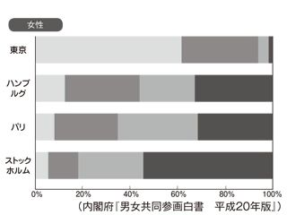

| 「女のしあわせ」がなくなる日 | |
| ももせ いづみ | |
| 主婦の友社 (2011) | |
主婦の友新書
〝本当にハッピーな人生〟を手に入れるためにすべきこと
「女のしあわせ 」がなくなる日
」がなくなる日
ももせいづみ
・ はじめに
私が20
代だった80
年代当時、女性は「25
歳は売れ残りのクリスマスケーキ」と揶揄されていて（24
日をすぎると価値がなくなるということ）、私の31
歳の結婚は大晦日滑り込みセーフぎりぎりの「晩婚」であり、34
歳の出産は、会社の同僚から「マル高での出産」と心配された。今から16
年前、日本はまだそんな社会だった。
今では31
歳の結婚はちっとも遅くはない。マル高なんて言葉も死語になった。
世の中は変わった。特にこの10
年ほどの変化はめまぐるしく、何かと押さえつけられることの多かった女の人生は、解放されて楽になった。少なくとも、制度や価値観は、女性を楽にしてきたはずなのだ。絶対に。
ところが実際に女性たちに話を聞いて歩いていると、「楽になった」と答える人はほとんどいない。逆に「大変になっている」と眉をひそめる人が多いのだ。どうしてなんだろう？
私は10
年ほど前から、働きながら子育てを頑張っている女性や、家庭の根底を支えている女性たちに向けて、多くの情報を発信し続けてきた。インターネットを通じてフォーラムの活動を行ったり、各地へ講演やワークショップに出かけては、たくさんの女性たちと交流も重ねてきた。最近はこれから就職を控える学生たちに、話をすることも増えた。
リアルに女性たちの日常に向きあっていると、みな、なんと必死に頑張っているのかと思う。でも、頑張っているのに、「なんだかうまくいかない」「ちっとも楽になれない」と感じている人たちが多いのもまた、現実なのだ。
この10
年、時代は女性のいる場所を楽にはしてきたけれど、同時に家族や結婚、生き方や働き方をめぐる現実も大きく変化を始めている。この変化は、これまで社会が経験してきたどの変化よりも、劇的で未来の予測が立たないものだと指摘する人もいる。
本文でも触れるが、１９９０年生まれの人は男性の３人に一人、女性の４人に一人は生涯独身であると予測されている。さらに結婚した人の３組に１組は離婚をしており、夫婦と子どもからなる世帯は減少を続けて、逆に単身世帯や夫婦のみ世帯が激増をはじめている。そんな時代を、私たちはこれから生きていかなくてはならないのだ。
保育所を増やして子ども手当を出すとか、婚活を推進すれば子どもが増えるなんていう発想は、こんな現実の前では無力だ。「結婚したらしあわせ」幻想は、もう今の日本にはないし、仕事をやめなくて済むなら女性は子どもを産むようになるわけでもない。さらにいえば、ワークライフバランスなんて、そもそも取れなくて当たり前と私は考えている。
日本が高度成長期から50
～60
年ほどかけて培ってきた「しあわせなライフコース」の幻想は、もう通用しない時代に、私たちは生きているのだから。
この本では、こうした結婚や出産、家族をめぐる今の日本の現実を紐解きながら、「女のしあわせ」がどこからやってきて、どこへ行こうとしているのか。そして、そんな現実の中、私たちが自分らしくしあわせに生きるにはどうしたらいいのかをテーマにしてみた。
これからライフコースを考えようとしている若い女性たち、人生の岐路に立っている女性たち、そしてそんな女性たちを支えていこうとする人たちに、少しでも何かのヒントにしていただけたら、幸いです。
ももせいづみ
「女のしあわせ
」がなくなる日●目次
「女のしあわせ」はどこにあるのか？
―――２人に一人は独身？ 激変をはじめた「しあわせの形」
・
結婚を維持できるのは２人に一人という時代へ
・
女一人で４人産まないと、既存のシステムが崩壊する？
・
「家族大好き」で保守化する若者たち
・
しあわせな将来のために必要なのは、夫、お金、親の健康
・
出産で仕事をやめる、というしあわせのライフコース
・
女性は世帯収入のうちの何割を担うのか
・
刷り込まれた女のしあわせの３Ｋ
・ しあわせの３Ｋから自由になろう！
「女のしあわせ」はどこから来たのか
―――あなたの中に埋め込まれている、母親世代のしあわせの記憶
・
「母親世代のしあわせの形」はもう通用しない
・
団塊の世代の祖母の時代「主婦の誕生」
・
団塊の世代を育てた母の時代「主婦下克上」
・
アラフィフを育てた母の時代「良妻賢母の誕生」
・
アラフォーを育てた母の時代「専業主婦全盛期」
・
アラサーを育てた母の時代「働く主婦の台頭」
・ イマドキの女子の母の世代「タテマエは平等の時代」
「女のしあわせ」はどこに行くのか
―――生きにくさの時代を作る情報化社会
・
メディアの中にある「女のしあわせ」
・
育児と家庭と仕事を両立する人があこがれ
・
３Ｋが５Ｋ６Ｋにふくれあがる時代
・
谷亮子から蓮舫へ。すべてを手に入れる女たち
・
社会のハードルが下がると、自己像のハードルは上がる
・
横方向に分断される女の情報
・
ノープランで不安な将来展望が、家庭回帰を生む
・
危険回避型の情報が、ＴＯ ＤＯ をどんどん増やす
・
病院化社会と、マニュアル化する子育て
・ 40 歳をすぎても続く「自分探し」と、新型うつ
「本当にしあわせになる」ための10 のヒント
―――これからの時代を生きる女性たちへ
 自分探し、自分磨きより「環境整備」をする
自分探し、自分磨きより「環境整備」をする
 「母」とのへその緒を上手に切る
「母」とのへその緒を上手に切る
「新しいしあわせのスタンダード〝３Ｓ力〟」のススメ
―――分け合い、育て、住まう力と、それを支える社会を
装丁／菅谷真理子（フレーズ）
編集／天野隆志（主婦の友社）
第13
回出生動向基本調査（２００５年）によると、18
～34
歳の未婚者の結婚意識では「いずれ結婚するつもり」と答えた人が、男性では87
・０％、女性は90
％だった。
晩婚化が進み、結婚だけがしあわせの形ではないと思う人たちが増えているといった報道も多いけれど、いまだライフコースの中に「結婚して、子どもを持ち、家庭を成す」ことを漠然と設定している人は多いということになる（注１
）。
70
年代、日本は「全婚時代」といわれる世の中だった。この時代に「50
歳の時点でまだ独身」＝生涯未婚率としてカウントされた男女は、ともにたったの１％台。お年頃になれば、どんな子でも黙っていても結婚できる。そんな時代に生きた親たちが今の子たちを育てていると思えば、「いずれ結婚するつもり」という考えが、今の若い世代にも根付いているのは、不思議なことではないのかもしれない。
ところが、実際には２００５年の時点で、30
～34
歳は男性が47
・１％、女性は32
％が未婚のまま。生涯未婚率は、男性15
・４％、女性６・８％とカウントされている。
女性の生涯未婚率が６・８％？ なーんだ、それならたいしたことないじゃん。私はちゃんとうまくやる、いずれ結婚するんだもん、と思う人は、国立社会保障・人口問題研究所が行った日本の将来推計人口の結果を、心に刻んでおくほうがよいと思う。
１９９０年生まれの女性の４人に一人、男性の３人に一人は生涯独身で過ごす
ことになる、と予測されているのだ。
だから頑張って婚活をする？ いや、ちょっと待って。結婚をしたとしても、その先のことは何も保証されていない。２００９年の厚生労働省の統計では、結婚した人の30
％が離婚をしている、と出ている（図表１）。
わかりやすく図にしてみよう。20
人の女性がいる。うち、４人に一人は結婚できない。残りは15
人になった。15
人の結婚できた人のうち、３人に一人は離婚する。残りは？
はい、10 人ですね。結局、「結婚」というライフコースをまっとうするのは、半分の人たちだけということになる。そんな時代に、私たちは突入しているってことなのだ。
一方、出生率の落ち込みも大きな社会問題になっている。２００５年の出生率が１・26
にまで減少したことは大きなニュースになり、この頃から盛んに「ワークライフバランス」がうたわれるようになった（注２
）。
育児で仕事を辞めなくてはならないと考えるから、女性は子どもを産まないのではないか。だから産んでも働き続けられる社会を作る。子育てに優しい環境を作り、男性も協力をして、二人で子育てをしよう。保育所を作って、イクメンも用意するからさ。現在のワークライフバランス政策はこうした目的で作られているものが多い。
そもそも、世の中には男と女がいて、女だけが子を産む。だから出産可能年齢の女性があまねくパートナーを得て、一人につき２人の子を産んで、その国の人口はやっと横ばいとなる計算になる。実際、日本も終戦直後のベビーブーム時（99
％の人が結婚できた全婚時代）は出生率４・５という高い数値で高度成長期に突入している。
ところが、前段の通り女性の半分は結婚生活を維持しないという時代になってしまったら、従来通りの結婚─出産コースを基にして考える限り、乱暴に考えれば結婚した女性は、一人で４人の子どもを産まないと人口は維持できない計算になる。
ありか、それ。ありえないだろう、さすがに。
かくして世の中は、出生率増加だけでなく、「婚活キャンペーン」にやっきになった。まずは結婚してくれなくちゃ、子どもも増えない。だからみなさん、結婚しましょう!
その間に子育てに優しいワークライフバランスを普及させますから、ぜひどんどん子どもを産んでください。日本は今、そんな状態にある。
先進国になるに従い出生率は減少して、人口はゆるやかに下り坂に向かうのだから、日本は少子化を前提としたシステムを作ればいいじゃないか。産む、産まないという個人の生き方の部分まで、国に口出しをしてほしくないとも思う。でも、実際には子どもが増えないと、既存の社会のシステムが立ちゆかなくなる現実は、どうしてもある。
戦後に増えた人口は、いま年金や健康保険などの既得権をがっつりと握っていて、この世代は、自分たちの権利に関わることだから、その原資を削るようなシステム変更はしたくない。だから、みなさん結婚して、未来に納税してくれる人たちをどんどん産んでくださいと御触れを出す、ということになっているわけ。
実際には若者たちは結婚や出産にはシビアな目を向けている人も多い。２００９年にクロスマーケティングが行った調査では、働く未婚女性のうち、結婚するほうがしないよりしあわせと考える人は、34
％にすぎないという結果が出ている。
また、内閣府が行った２００９年の男女共同参画社会に関する世論調査の結果では、20
代・30
代の約６割は「結婚しても必ずしも子どもを持つ必要はない」という考えに賛成だと答えている。
どんなに推奨されても、若い世代にとって、ほんとは結婚も出産もちっとも魅力的じゃなくなっちゃったのだ。結婚や出産そのものを「しあわせ」の代名詞としてプロパガンダできた時代は、もうとっくの昔に終わってしまっている。
それなのに冒頭で紹介したように、大半の女性は「いずれは結婚したい」と考えている。なんでなんだろう。
男性の３人に一人、女性の４人に一人が近い将来に生涯独身で過ごすと推定されており、今結婚している人の３割は離婚をし、さらに今子を持つ世代である20
代と30
代の若者の６割が「別に子どもがいなくてもいいじゃん」と考えている。そんな時代。
これは大変だ! と思う人もいるかもしれない。現に、１９７５年の国勢調査で全体の42 ・５％を占めていた「夫＋妻＋子ども」からなる世帯数は、２００５年では29 ・９％まで減り、逆に単独世帯が激増した（図表３）。
今でも日常のさまざまな場面で、家族は「パパとママと子ども（多くは２人）」として描かれることが多いし、制度や商品開発のマーケティングでも、こうした家族像が多く設定されている。でも、そんな組み合わせの家族は、今や３割に満たない存在になってしまった。街中のあちこちに存在するかのように思える「しあわせそうに見える家族」のユニットは、ほんとは大して多数派なんかじゃないのだ。
さて、じゃあ日本はいま家族離れを起こしていて、家族観はよい意味で多様化を受け入れていくのか？ というと、ちょっと違った現実が見えてくる。
統計数理研究所が行った日本人の国民性調査によると、「あなたにとって一番大切なものは何ですか？」との問いに「家族」と答えた人は、１９５８年で12
％だったのに比べ、２００３年では45
％にまで上がってきている。
晩婚、非婚、少子化、離婚、高齢者の親との同居率の低下などにより、いままで「絶対」と思っていたものが確かなものでなくなったとき、人は逆に「家族って絶対大切なものだよね」と繰り返し口に出すことで、その存在を確認したくなるんじゃないのか。
大学で教える知人たちからも、学生たちの「家族」好きを表すエピソードがあれこれ聞こえてくる。今の若者は、このような矛盾した価値観の中に身を置いているように思う。
また、長引く不景気で、今は新卒者でさえ就職内定率が６割に満たないという状態だ。こうした中で、若者は保守化の道をたどっている。日本マーケティング研究所が行っている消費者調査では、「ものの豊かさより心の豊かさが大切だ」「伝統や歴史あるものに豊かさを感じる」「自分の国や民族の文化を守りたい」などの安心信頼傾向が強まって、自己実現志向や上昇志向は減少していると報告されている（図表４・５）。
海外旅行に出かけたり、レジャーやグルメを楽しむよりも、気心の知れた仲間と家の中でくつろぐ内ごもりのスタイルを好み、流行の先端よりも、歴史や伝統に興味を持つ。そして、人生には自己実現や上昇よりも、堅実な道を選びたいと考える。
そんな流れの中にいる若い女性に、再び「専業主婦志向」が見え隠れしはじめているというのは、想定内の傾向なんじゃないだろうか。
こうした報道を聞いて、「ほら見てごらん、女性はやっぱり家庭に入るのが一番!
」なんて言う御仁もいるが、そりゃあすっかり勘違いというものだ。今の「新・専業主婦志向」は、専業主婦というライフスタイルが見直されたからなんかじゃない。不景気な上に、ライフコースや家族の形までもが不明瞭なものになってしまっている今、過去に絶対と思われていたものたちに、彼女たちは一瞬関心を向けているだけのことだ。
結婚や出産には消極的だけれど、家族は大好き。仕事で自己実現をはかろうとする上昇志向よりも、内ごもりのプライベートライフを好み、冒険するよりも堅実な人生を送りたいと願う新・保守層。
では、今を生きているそんな若い女性たちは、自分の未来にどんなしあわせの形を描いているのだろう。
いま、若い世代の女性たちが考える「しあわせな生き方」とは、いったいどんなものなのか。本書を書くにあたり、都内の女子大とインターネットの働く女性向けサイトの協力を得て、アンケートをとらせてもらった。

図表６は、「あなたのしあわせな将来に必要なものは何ですか」の19 の設問に対し、６つまで選択してもらった結果。女子大生と社会人で差は見られるものの、おしなべて両者ともトップ３になったのが
●夫
●十分な収入
●親の健康
だった。一方、学歴、マイホーム、社会的な地位などはいずれも低位だった。
女子大生と社会人の間で大きな開きが見られたのが、子どもに対する考え方だ。総じて、女子大生のほうが夫と子どもに対するしあわせの期待値がとても高い。特に「子ども２人」にしあわせ感を抱いている学生は47
・８％にのぼり、３人欲しいと考える学生も23
・２％いる。
１人から３人以上まで、とにかく自分が将来しあわせになるためには「子ども」が必要だと答えた人は、社会人で51
・２％、女子大生はなんと78
・２％もいたことになる。
ところが、未来のしあわせ像に「子ども」が必要と答えた数以上に多かった項目がある。「親が元気なこと」だ。女子大生の親は40
代～50
代。社会人女性の親も、50
代～60
代前後で、まだまだ現役の人たちが多いのに、だ。
ここ数年、女性のライフスタイルを追いかけてさまざまな人たちに会ってきたが、現代の若い女性たちに共通して感じるのは、「親」の大きな存在感だ。精神的な部分だけではなく、経済的な原資のありかとして大きな存在となっている人も多い。
自分が産む子どもよりも、親の健康が将来のしあわせには大事と考える彼女たち。前段で、今の若い世代は保守化して「家族が大好き」という話を書いたが、彼女たちが思い描いている「家族」は、どうやら自分と親からなる家族を想定しているようだ。
ご協力をお願いした日本女子大学の永井暁子先生もこう話す。
「本当に彼女たちは家族が大好きなんです。自分たちの親がやってくれたことを、そのまま自分もしていくんだと思っている。子どもを産んだら一回育児に専念したあとにまた働くなんて言われても、時代はまったく変わってしまったのだから同じようにはいかないよ、と口を酸っぱく話してもピンとこない。それだけ、愛情を注がれて丁寧に育ててもらった世代なんですよね、今の子たちは」
豊かな時代の豊かな家庭が育てた子どもたち。その彼女たちは将来のしあわせのために、夫とお金と親の健康が必要だと考えている。ここに共通しているものは「愛情」と「原資」だ。乱暴なくくり方をすれば、しあわせになるために必要なのは「愛とお金」だということになるのかもしれない。
では、しあわせのためにどうやっても必要なお金のために、彼女たちはどう働いていこうと考えているのか。次の項でみてみよう。
図表７は、あなたが思い描くあなたの「しあわせな働き方」を、11 のパターンに分けて聞いた結果だ。おもしろいほどの違いがあるのがわかるだろうか。
社会人女性は、結婚や出産に関係なく働き続けると考える人が61
・４％と半数以上を占める一方で、女子大生はずっと働き続けると考える人は34
・７％にとどまっている。一方で女子大生は出産を機に仕事を辞めると考えている人が53
・２％と半数以上もおり、社会人の23
・４％に比べて圧倒的に多い。母数が違うので一概には言い切れないが、大学生の考える「しあわせな」ライフコースがかなり保守的であることがわかる。
社会人になって現実を知るに従い、働かなければ金銭的余裕がある暮らしは送れないのだ、というあたりがわかってくる。結果、半数以上の人が「結婚や出産に関係なく働き続ける」と考えるようになるのではないか。でも、そのスタートライン以前にいる大学生にとっては、「自分がずっと働く」のはイメージしにくいことのようだ。
ただし、結婚・出産後のライフコースとして専業主婦を選ぶ人は双方とも非常に少なく、特に女子大生に至っては結婚して専業主婦になることを選んだ人は一人もいなかった。
今回アンケートに回答してくれた女性たちにとって、専業主婦はすでに「しあわせ」な未来のライフコース選択からははずされているようだ。結婚や出産を機に専業主婦になりたいと答えた人は、学生も社会人も非常に少数派だった。
ただ、出産は大きなターニングポイントとして彼女たちの中に位置づけられていることがわかる。今回のアンケートでは、半数の女子大生が「子どもを産んだらとりあえず仕事は辞める」と答えた。「妻は働く」けれど、「小さい子どものいる母は働かない」
という将来像を設計していることになる。
とはいえ、出産と子育ては、彼女たちにとっては専業主婦になるための道ではない。多くの女性が「子育てが落ち着いたら復職」したいと回答しているからだ。
出産による退職は単に「子育てに専念するためのお休み期間」なのだ。制限付きお休み期間と思っているから、人生のどこかの時点で再び仕事をする可能性は想定している。ただ、その先のことはあまり青写真が描けないので、とりあえずパートやアルバイトという形で、自身の中で認識しておくということなのだろうと思う。
「出産後にパート、再就職」の回答が社会人女性では低く抑えられているのは、実際に社会に出てみて、それがまったくもって容易なことではないことを、身をもって知るからなんじゃないだろうか。
さらには、パートナーとなる人たちの収入のレベルも、だんだんわかってくる。同僚男性の経済状態を見るにつけ、今の世の中では、「子どもができたことを理由に自分が仕事を辞めても、夫一人の収入で妻と子は養えない」ことを実感して「ずっと働く」と考えるようになる人もいるだろう。
また、社会の中でさまざまな生き方をしている女性や、子どもを持っても仕事を続ける先輩女性社員などに出会うことで、「ずっと働ける」と思えるようになる人もいると思う。育児休業が取得できる、時短も取れるということがわかれば、「産んでもやめる必要はない」ことがわかるからだ。こうした、ある程度お手本になる前例（ロールモデル）の存在は、女性たちにとって大きな影響力を及ぼしていく。
逆に言えば、社会経験がなく、多様なロールモデルに出会う機会がないまま就職活動を迎えている女子大生にとって、出産→退職→パートといったライフコースが、漠然と思い描くしあわせな未来の形として想定されてしまっているようにも思える。
これはまさに、彼女たちの親がたどってきた女性のライフコースでもある。その結果、十分な愛情を得て、しあわせな暮らしを送れたと記憶しているから、また自分も同じ道を通ろうと考える。女子大生たちのライフコース選択には、どうやら親の価値観や親の経験値が大きく関係しているようだ。
では、彼女たちは将来、結婚後に世帯の中でどのくらい稼ごうと考えているのだろう？ 質問をしてみたところ、パートナーと半々に折半と考える人は、女子大生で約３割、社会人で約２割という結果になった。
一方、パートナーを主な稼ぎ手として、20
から30
％程度の収入を自分が担うと答えた女子大生は、なんと６割強に達し、自分が主な稼ぎ手になってもよいと答えたのは、女子大生で７％、社会人ではわずか４・２％だった。
んんん？ しあわせな将来に必要なベスト３に「金銭的余裕」を挙げながら、自分で稼ぐのは２、３割？ 確立したキャリアとして仕事を考えればこの割合はありえない。つまり、将来的に世帯収入の２、３割を担うのがしあわせな働き方だと答えた彼女たちは、自身の働き方を、パートやアルバイトなどの補助業務的な仕事として考えているように思える。
個別の設問では、「結婚と出産に関係なくずっと仕事を続ける」と答えた社会人女性が６割を超えたのは、ある意味よい変化なのだと思う。しかし、そうして仕事を続けても、夫と50
％ずつ収入を担うと考えた社会人女性は２割にすぎない。
男女により賃金格差の現実は歴然とあるので、男性よりは稼げない現実を知っている社会人女性はたくさんいる。さらに、仕事をしながら子育てをするためのインフラが、いまだ十分整っていないという現実も歴然とある。
でも、いくら社会的なインフラ整備を整えても、女性の「しあわせ」の想定の仕方が変わらなければ、何も変わらないのではないか。
子どもを持ちながらフルタイムで働き、収入を維持することの困難さは、かねてから口の端にのぼることが多かった。でも一方では、そのライフスタイルでしあわせに暮らしている人たちもたくさんいる。シングルで未婚の母でもしあわせな暮らしはできるし、働き方を変えたり、海外に出る人もいる。
出産によるライフコースの変更は、決してステレオタイプではないはずなのだ。ただ、そうした多様なライフスタイルが、若い世代の目になかなか入ってこないから、広く流通した「しあわせな働き方」を彼女たちは想定してしまうのではないか。
しあわせな女のライフコースとしての「結婚・出産・一旦退社後のパート勤務」。この発想はいったいどこで作られたものなのだろう？
次にあるリストは、女子大生を対象に「あなたにとって、しあわせとは何ですか」「社会の中で女のしあわせと捉えられているものは何だと思いますか？」の質問に寄せられた自由記述の回答だ（図表８）。

彼女たちにとって、今の自分のしあわせを表すのは、「笑顔」「おいしいもの」「不安がない」という心の状態として認識されているのがわかる。これはある意味、とても正しいしあわせの認識の仕方だと私は思う。
ところが、「社会の中で女のしあわせとされているもの」という要素を付け加えたとたん、彼女たちの答えは突然、個性のない同じ言葉の繰り返しになる。そこにはひたすら共通の言葉が繰り返されることになる。21
世紀の20
歳の女性たちから、こうした言葉が次々と発せられるとは思っていなかった。
「よいパートナーと出会い、しあわせな家庭を築くこと」「出産、素敵なだんなさまを持つ」「好きな人と出会って、結婚し子どもが生まれて家庭を作る」
おもしろいほどに似通った言葉の羅列。女性の生き方が多様化しているはずの現代で、この異様な均一さ。そこにはこの３語が必ず含まれていることがわかる。
Ｋ 結婚 →しあわせの３Ｋ
Ｋ 子ども →しあわせの３Ｋ
Ｋ 家庭 →しあわせの３Ｋ
女のしあわせは、「結婚して子を産み、家庭を成す」ことにある。高度成長期以降の日本は、そんな「３Ｋ」を、女のしあわせとしてきた。できれば、子どものＫは２人分がよい。それをすべて手に入れてこそ、女は一人前のしあわせを手に入れられるという、しあわせの方程式がここにある。
Ｋ（結婚）＋Ｋ（子ども）×２＋Ｋ（家庭）＝一人前
結婚して子どもを２人産み、それで一世帯を成すというしあわせの３Ｋの方程式は、今も男女ともにごく自然な社会通念として語られることが多い。
でも、実際にはこれは戦後の高度成長期を発端に、まだ50
～60
年ほどの歴史しかないライフコースなのだ。簡単に振り返ってみよう。
夫婦と２人の子どもで一世帯という考え方は、そのまま高度成長期から日本が社会システムの基盤にしてきた「標準家族」の形だ。男女二人から２人の子どもが生まれることで、人口は横ばいとなりシステムの維持が可能になるからだ。これが日本社会を継続させるための標準の１ユニットとなる。
さらに、そのモデルケースは「サラリーマンと専業主婦」という男女の組み合わせとして考えられてきた。
「家」を継ぐ役目の長男は出生地にとどまる必要があったけれど、家業を継ぐあてのない次男、三男は高度成長期にこぞって職のある都会に出てきて、新しくてきれいなお仕事でもある「サラリーマン」になった。家制度からも、出生地からも自由な彼らに用意されたのが、結婚と子どもとマイホームで手に入る「一人前」ユニット。それが、新しいしあわせの形になったのが高度成長期だった。
さらにここで、政府は男女一人あたりの独立した賃金ではなく、男女セットでの「世帯収入」を税制の基本にして、専業主婦を優遇した。妻に専業主婦を選んでもらえれば、企業もサラリーマンも税金や社会保険料をセーブできて得をする計算になる。
専業主婦が内職やパートをするようになると、収入を１０３万円以下（所得税の控除）、１３０万円以下（社会保険の控除）に抑えさせることで、サラリーマンが扶養控除を受けられるようにした。これ以上の額を妻が稼ぐと、妻の分の税金が増えて世帯収入が逆に減ってしまうから、妻たちは仕事の量を加減するようになった。
パートは年金や社会保険が発生しないから、企業は安く補助業務の人材を確保できる。サラリーマンと専業主婦の組み合わせを作って優遇したことで、税金も保険料も払わなくてよく、人件費もいいあんばいに節約できる便利なパート主婦という人材をも、企業は確保できるようになった。
サラリーマンと専業主婦と２人の子どもを１ユニットとした「標準家族」のライフスタイルは、限りなく昭和の時代の「企業にとって」好都合なものだっただけで、別に個人のしあわせをあらわすものじゃなかったはずだ。ただ、その時代の中で、新しいライフスタイルと豊かさというイメージを持って、きらきらと輝いていただけ。
結婚して、子どもを２人産み、育児が落ち着いたらパートで家計を支える。そして、世帯収入の20
～30
％を負担する。
高度成長期に、社会経済の都合で考えられた仕組みが、いまだ「女のしあわせなライフコース」として、若い女性たちの中に刷り込まれている。社会そのものがもうすっかり様変わりしてしまったというのに。
でも女たちはとっくに気づいてもいる。しあわせの３Ｋの中身は、結局はＫ（家事）とＫ（子育て）とＫ（高齢者介護）というしんどい３Ｋでもあったのだ、ということに。社会という言葉をはずした場所では、彼女たちはちゃんと幸せの本質に気づいているのだ。
「女のしあわせ」の砂糖をまぶして、家事と子育てと介護を女性の役目として家庭の中に閉じ込めてきた時代の責任は大きいのだ。
若い女性たちにとって、今も社会における女のしあわせとして認識されている「結婚して子を持ち、家庭を築く」しあわせの３Ｋ。
でもそれは、結局は女性を「Ｋ＝家事労働」と「Ｋ＝子育て」と「Ｋ＝高齢者介護」に閉じ込める３Ｋとなり、女性たちのライフコース選択を大きく支配してきた。そろそろここで、もうそんなしあわせの３Ｋから、自由になっていいんじゃないの？ と私は思う。
だってそれは、あなたがしあわせな人生を送るために考えられたことなんかじゃなくて、ただ日本というシステムをうまく動かすために、上手に仕組まれたプロジェクトにすぎなかったのだから。
そして、そのシステム自体がもう稼働しなくなっている今、あなたの将来のしあわせの中に、過去の亡霊のような３Ｋの言葉をちりばめる必要は、もうないと思うから。
まず「結婚」「子ども」「家庭」という言葉自体から自由になろう。
それは、決して結婚も出産もしなくていいってことじゃない。社会的に規定されがちなこうした言葉を使うのをやめて、自分なりに「誰かと共に生き、育て、暮らしていく」ことに再び目を向けようってことだ。
このあたりの発想の置き換え方は、第５章で取り上げていく。
さらに、「結婚や出産でライフコースを分断する」発想から自由になろう。
あなたの人生の主役はあなたであって、いつどこからやってくるかもわからない夫や子どもという不確定な存在を想定して、「いつでもあなたたちの都合のいいように変われる私」を用意するのは、もうやめよう。
あなたが確固とした生き方を持っていれば、そんなあなたにふさわしい人と出会える。そしてパートナーも子どもも、あなたのその生き方を肯定してくれるはずだ。「妻にも母にもなれる都合のいい女」として誰かを、何かを待ち、そこに追従していくという考え方をやめない限り、これからの日本ではしあわせはつかめないと腹をくくろう。
女性が出産とともに退職し、子育てのブランクを経て再び就業する「Ｍ字型就業」は、現在の欧米などでは見られない現象で、日本と韓国など一部のアジアの地域だけに存在している。こうしたＭ字型のライフコースは、もう考えちゃいけない。
だって、日本は未曾有の不景気で、大学の新卒者でさえ就職先がないっていうのに、せっかく手に入れた正社員を一度辞めてしまったら、数年後にフルタイムで再就職なんてよほどのことがなければできないんだってば。
さらには、パート勤務はほとんどが低賃金労働で、最低限の社会保険も保証されないので、どんなに頑張って働いても、フルタイム勤務の半分ほどの年収しか確保できない。もし、夫がリストラにあうとか、離婚して一人で子育てをするなんて事態になったら、即経済的に破綻してしまう。
女性たちは、社会に出てからさまざまな現実を知る。それでいいじゃないか？ と思う向きもいると思う。
でもね、と私は思うのだ。
進学先や学部を決め、もしくは専門技能を身につけて就職先を決めるという時期に、「子どもができたら一度辞めて、そのあとパート」というライフコースを描いていて、いいの？
だめ。絶対にだめ。だからこそ、自分たちの未来にこうした視点をしっかり持つことが、これからはとても大切なのだと思う。
●長く続けられる仕事に就く
●仮に出産でブランクができても、収入レベルを挽回できる技能を身につける
●結婚をしなかったとしても、自活できる収入の仕事を選ぶ
時代は10
年サイクルほどのスパンで、大きく価値観を変えてきている。その時代に絶対だと思われてきたものは、結局はすぐに問題が起きたり、飽きられたりして次の価値観が生まれてきたのだ。
私たちが親から受け継いできた「しあわせの形」は、実はとてもうつろいやすいものだ。20
年前のしあわせな生き方は、もう今の時代には通用しないばかりか、逆にさまざまな葛藤や迷いを生み出す原因にもなりかねない。そんなものに、しばられていちゃいけない。
しあわせの３Ｋから自由になろう。あなた自身のしあわせな生き方を手に入れよう。
ん？ ではこれまで女性たちがしあわせと信じているものの正体は、いったい何だったんだろう。それはどこから来たものなんだろう。
実はそこには「あなたの母親」が大きく関わっている可能性がある。しあわせの３Ｋの遺伝子から自由になるためにも、次章で「しあわせの３Ｋ」が作られた歴史に、ちょっと目を向けてみよう。
第１章では、これから将来像を考える年齢にある今時の女性たちの「しあわせ感」を紐解いてきたが、こうした「しあわせ」のモデルイメージは、時代によってどう変化してきたのだろう。
女性史や家族史を学んだことのある人なら、前章のアンケートで多くの人が将来手に入れたいと答えている「夫＋妻＋子ども」で構成される「家庭」の姿には、まだ50
～60
年ほどの歴史しかないことは重々おわかりのことだと思う。そう、何をもって「家庭」「主婦」「女性の仕事」とするのかは、この半世紀で大いに変化したのだ。
「サザエさん」を古典的な家族像ととらえる人もいるけれど、サザエさんは連載当初は最先端の女性で、新しいライフスタイルだったわけだし、政治家がよく「家族本来の姿」などと口にする保守的な家族像には、さほど長い歴史があるわけじゃない。
これからライフコースを考えたり、結婚や子育てで仕事をどうするか迷っている人たちは、せめて１９５０年以降の女性と家族の簡単な歴史はおさえておくほうがいいと、私は思う。１９５０年といえば、現在60
代の人たちが生まれた時代。つまり、今の20
代から40
代の人たちの母親が生きた時代の女性史ってことになる。母親が何を目指して生きてきたのかを、知っておくということだ。
女性が自分の将来像を描くとき、そこにはかなり大きく「母親」の存在が影響している。
それが「母のようになりたい」というお手本であっても、「母のような生き方だけは嫌だ」という反面教師であっても、母親が考える「女のしあわせ」の価値観は、娘に大きく影響する。若いうちは気づかなくても、結婚や子育てに直面して、自分が「妻」や「母」の立場になったとき、心の奥底からにじみ出てくることも多いのだ。
だから、自分の母親がどんな価値観の時代に生きてきたか、さらにその母親は、どんな時代を生きた親に育てられたのか、といったあたりを知っておくのは、自分のライフコースを考える上で、必要なことだと私は思う。
もし、あなたが見据える未来の中に、母親世代の考えるしあわせの価値観が色濃く刷り込まれているのだとしたら、そこからちょっと距離をおいてみることが必要になる。
なぜなら、１９９０年後半から２０００年以降、社会はこれまでにないほど急激な変化を遂げているからだ。この間に起きたことは、日本が戦後から高度成長期、バブルの時代へと推移した１９５０年から１９９０年までとは、「家族」と女性のライフスタイルに起きた変化の質が劇的に違う。
つまり、親の世代の価値観を受け継いで、先達の作った道筋を参考にしていればなんとかなった時代は終わりを告げ、今はこれまでの経験だけでは予測不能の時代に突入している、ということ。
「母親から受け継いだ〝女のしあわせ〟の形は、あなたの将来にとっては意味のないもの」である可能性もある、という自覚を持つことは、とても大切なことだと私は思う。
もうひとつ念頭に置いておきたいのが、母親は時として、娘の人生でリベンジをはかる、ということだ。
１９５０年以降、女性の歩んだ道は平坦ではなかった。見合い結婚も多かったから、自由な恋愛で結ばれる結婚にあこがれた人もいる。子どもができたら会社は辞めるのが普通だったから、キャリアを中断された人もいるだろう。経済的な自立を果たしえなかった女性たちは、不本意な結婚であっても夫との暮らしを続けるしかなく、そうした中で「あきらめたこと」「我慢したこと」の怨念のようなものを、心の奥底に沈めてしまう場合もある。
自分がなしえなかったこと、我慢してきたことを「未完の仕事」として抱え持つ母親たちは、それを娘の世代で実現しようと考える。娘を使って、自らの人生のリベンジをはかるのだ。このリベンジ劇に巻き込まれると、やっかいだ。母親と娘は違う人格なのだし、なにより時代がもう変わってしまっている。過去の価値観でリベンジをはかられる娘たちは、たまらない。
女も男も、心のどこかに「母の考えるしあわせの形」の遺伝子は埋め込まれている。母の時代の「しあわせ」とは何だったのか。この半世紀を振り返ってみよう。
「主婦」という言葉が普通に使われるようになったのは、１９１７年に創刊された「主婦の友」のあたりからではないか、と言われている。そう、この新書の出版社でもある「主婦の友社」は、「主婦」という言葉を生み出した存在でもあるらしいのだ。
ひとつの時代を作った立役者である。この「主婦」という存在のあり方が、その後の女性たちのライフスタイルを大きく左右してきたことを考えると、なんともすごい。というか、なんとも罪作りだ。
ただ、こうした「主婦」の誕生は、単に雑誌が生み出した流行語なのではなく、時代そのものが生み出した「必然」でもあった。「主婦」が誕生した大正期から今まで。ほぼ１００年にわたる「主婦」のあり方の変化を追いかけていくと、日本の歴史そのものが見えてくる。「主婦」は大いに時代を反映している存在なのだ。
もともと「主婦」は、商家などの家長の妻を指す「主（あるじ）の婦人」の呼称として使われていたが、やがてそれは、家庭の中で衣食住の管理や、育児を行う役目を担う存在の呼び方として、使われるようになった。
これまで「本家の嫁」とか「娘」と、家族という仕組みの中で相対的な呼び方をされていた女たちを、家の仕事をする「主」（あるじ）の地位として位置づけたのが、「主婦」という言葉だった。要するに、主婦は当時としてはとても「進んでいて」「かっこいい」存在だったのだ。まったく新しい概念だったから、「専業」とつける必要もなかった。主婦は誰もがなれるものではなかったし、主婦であるだけで特別な存在だったのだ。
大正なんて、もう遙か昔のことだから、関係ないと思う人は、よく考えてみてほしい。
今の団塊の世代の祖母は、ここからはじまる「主婦の全盛期」を背負ってきた人たちだ。第二次世界大戦から、高度成長期に向かうに従い、主婦はますます「新しくてきれいで最先端のニューステイタス」化していく。この一連の流れの中に身を置いた祖母と母を持つのが、団塊の世代ってことになる。
現在、団塊ジュニアといわれている世代の女性たちの中には、祖母と母の世代間連鎖の中で、大正時代にさかのぼる「主婦全盛」の記憶の遺伝子が埋め込まれているのではないか。第１章でアンケートをとった女子大生や、社会人女性たちの回答の中にも、こうした記憶の遺伝子が受け継がれているように思える。それほど、この時代に生まれた「主婦」という新しい価値観の持つ力は大きかったように思う。
大正時代、主婦の仕事とされていたのは、衣食住全般の家事、育児と子どもの教育、家計の管理、そして家族の健康管理などだったという。つまり、第１章で書いた「女の３Ｋ（家事・育児・介護）」の萌芽は大正時代にさかのぼることになる。
明治から大正にかけて、日本の産業はまだ第一次産業が主流を占めており、女性たちの多くは農家や商家の中の大切な労働力だった。日本はまだまだ貧しく、女中として奉公に出たり、劣悪な条件の中で働かざるをえない女たちも多かった。
そんな中、「主婦」という概念は、女性たちに新しくて、きれいで、知的な役目があることを示した。裁縫の技術を身につけることで、家族の衣類の調達と管理を受け持つ。教養やマナーを身につけることで、両家の子女として恥ずかしくないように子どもをしつけ、教育する。栄養・調理の技術を身につけることで、家族の健康管理を担い、そろばん・計算の能力を家計管理に生かす。
しかも、その役目を担う自分は「主」婦であって、家族制度の中で虐げられる存在でも、組織の中で搾取される存在でもないのだ。
これはもう、それは画期的なことだったのだ。それまで鋤、鍬を持って畑を耕していた女たち、炭坑で男にまじって肉体労働をしていたような女たちもたくさんいた世の中で、「主婦」は社会の中ではなく、家庭の中に新しい「女性の仕事」を生み出した。
改めて考えてみれば、当時の「主婦」は、その後１９８０年代に生まれたキャリアウーマン志向と同じく、女性がこれまでにない能力を身につけることで自らの地位を上げていくという発想を持っていたのかもしれない。
きれいで、知的で、スマートな新しい女性の使命。ただし、当時はまだ「主婦」はごく一部の特別な人たちだけがなれる存在で、大正から昭和初期にかけて、実際にこうした主婦の地位につけたのは、経済的に恵まれた限られた人たちだけだった。ある意味、だからこそ、大正時代の「主婦」は掛け値なしのあこがれの存在として、多くの女性たちの関心を惹きつけたのだと思う。
いわゆる団塊の世代（１９４７年から１９４９年くらいまでの間に生まれた人たち）の母が結婚や出産の年齢を生きた時代は、かなり波乱に満ちている。第二次世界大戦という大変な時代に突入してしまったのだ。彼女たちが就職や結婚、出産を考えていた年齢の頃は、戦争と戦後の高度成長期という２つの両極の間を揺れ動いた時代のさなかにいたことになる。
１９３８年に「国家総動員法」（国がすべての人や物の統制や運用ができるようにした法律）が制定されて、男性の多くは徴兵され、女性たちも「勤労動員」として軍需工場などに送り込まれることになった。
一方で、「産めよ、増やせよ」という国家体制のもとで、結婚と出産が奨励されて、国が人口政策に強く口を出すようになる。そんな中で、戦局はどんどん悪くなり、日本全体が「欲しがりません、勝つまでは」といったスローガンのもと、大がかりな禁欲体制に突入していくことになる。
さて、ここで「主婦」はまったく新しい地位を得ることになる。なにしろ、お国の一大事なのだ。これまで、ごく一部の都市部の恵まれた人たちだけのものであった「主婦のお仕事」が、お国を守るためという大義名分のもと、既婚女性たちの使命となった。
裁縫や調理、家計管理は教育を受けて身につけるものだったからこそ、主婦は富裕層、中間層の女たちのものだったのが、今や貧富層や教育を受けられない層の人たちも、そのスキル獲得に参加できるようになったのだ。
戦争で不在の男の代わりに家庭を守り、子を育て、しかも創意工夫をこらして節約をすることが、戦時下の女性の役目になったことで、少々不謹慎かもしれないが、実際ものすごく張り切っちゃった女性たちがいた。そして、これまで「主婦なんて高嶺の花」と思っていたような階層の人たちも、こぞってそのお役目に参加するようになった。だって、お国のためだから。
女も男もさほど豊かではなく、ひたすら働いてとにかく食っていかなくてはならなかった層が大半だった日本で、「主婦」は新しい女の生き方として衆目を集めた。一部の人たちだけに許されたその地位は、戦争という大きな価値観の変容を経て、庶民の物になっていったのだ。
......って、こんな風に戦争前後の歴史を紐解いてみると、とても不思議な気持ちになるのだ。戦後日本の主軸を成し、よくも悪くも「今」の日本を作ってきたとされる団塊の世代を育てた母たちは、そんな時代のさなかに結婚や出産に直面していたのだ、と。
戦争はもう過去のものであり、映画で見るような、戦時下で割烹着やもんぺを着た女性たちに何の実感も持てない世代が増えてきている中で、でも、今の日本の社会を作った人たちは、そんな母親たちに育てられてきた。
戦争は、ある意味「主婦」というステイタスの下克上状態を作ったのだ、と私は思う。団塊の世代を育てた母たちは、そんな主婦の下克上時代を生きた人たちだ。戦争という国家の一大事の中で大きな使命を自ら担い、さらにその使命を糧に、自分たちの地位を「主婦」というひとつのステイタスに押し上げていった。
１９４５年に戦争は終わりを告げて、世の中は急速に高度成長期に突入していく。高度成長期は、はじめて「専業主婦」という言葉が生まれ、適齢期の男女のほとんどが結婚をする「全婚時代」となった。日本が大きく発展するこの時代には、「主婦」の存在が大きく関与している。
その時代の根っこを作ったのは、戦中から戦後にかけて結婚や子育てに向き合った、団塊の世代を育てた母たちなのではないか。彼女たちは決して豊かな時代に育ったわけではないけれど、時代の中である種の使命感を感じ、創意工夫をして自らの役割を創出していく気骨が満ちていたように思う。
こうした母たちに育てられた団塊の世代の女性たちの中に、その後学生運動やウーマンリブ運動を起こした人がいることや、女性の社会進出やジェンダーフリーを説いた人たちが多いことは、偶然ではないように私は思う。同時に、家庭と女性の自立を両極に置いた中で、アンビバレントに引き裂かれてしまったのも、団塊の世代といえるかもしれない。
大正時代に最先端のものとして生まれた「主婦」の発想は、戦争を経て庶民のものになり、高度成長期にそれは一気に大衆化していくことになる。
さて、戦争が終わって、日本はいよいよ高度成長期に突入する。現在50
代前後の女性たちの母にあたる、現在70
代、80
代の女性たちが20
代だったのが、１９５０年から60
年代、高度成長期の萌芽の時代だ。
彼女たちが就職や結婚、出産を考える年齢の頃の女性のモデルケースは、「良妻賢母」。このひと言に尽きるんじゃないだろうか。
日本は第二次世界大戦の終戦後、１９５０年代から急激な高度成長期に入った。戦争で女たちはみんな、とても頑張った。家や夫を失った人たちも多かった。その反動もあってか、世の中が豊かになってくると、都会のおしゃれできれいなイメージを持つ「主婦」というステイタスに、女たちの関心は集まっていく。
戦争のおかげで、主婦のステイタスは庶民のものになっている。おりしも、そこに主婦という存在を確固なものとする絶好の存在が登場しはじめる。サラリーマンだ。
急速な経済成長で雇用が増えたところに、郷里に残って跡を継がねばならない長男以外の男たちが、こぞって都会に出てきた。戦前の封建的な家制度とも、戦時中の不安定で縛りのきつい家庭生活とも違う、企業に雇用されて都市部に住むサラリーマンを中心にしたまったく新しい「家庭」の創出に、みな夢中になった。
この時代、企業に雇用されるホワイトカラー従事者、サラリーマンの数が、雇用全体の半数を超える。ここにはじめて
夫＋妻＋子ども二人
という「標準家庭」のユニットが登場することになる。
いまでも、学校の配布物や官公庁の出しているパンフレットでは、家族がこのユニットで描かれているが、これはこの時代に生まれたユニットだ。パパとママ、お姉ちゃんと弟。たいていの場合、妻は専業主婦かパート勤務。子どもは小学生か未就学児で想定されるパターンが多い。住宅会社や家電、生活用品を作る企業でも、こうした標準家庭ユニットをもとにした商品開発や情報発信が、いまだ行われている。
今の日本の政治や経済で大きな決定権を持っているのは、50
代、60
代の人たちだろう。この人たちが「家族の形」に設定しているものは、その人を産んだ母の時代が新しい形として飛びついたものにすぎなくて、それ以前はほとんど存在しなかったものだ。
現在アラフィフである人たちの母親は、こうした新しい家族創出の時代に、結婚して子どもを産んだのだ。戦前の過酷な労働や貧困への反動もあった。一方で、戦時中には「賢い生活術と、兵士を育てる母の心構え」の情報が累々と積み重なっていた。結果、彼女たちに求められたのは「良妻賢母」。この洗礼をがっちりと受けた母親たちに育てられたアラフィフには、今もしっかりと、この遺伝子が組み込まれていると私は思う。
大正時代、一部の恵まれた層にのみ許された、新しくておしゃれな女性の役割「衣食住全般の家事、育児と子どもの教育、家計の管理、そして家族の健康管理」が、戦争を境に庶民のものとなり、高度成長期に広く普及したということになる。
彼女たちにとって、主婦になるということは貧困や家の呪縛からの脱出であり、大いなるサクセスストーリーだったのだ。
こうした一連の流れを、企業も歓迎した。仕事に邁進する企業戦士を育てるために、身の回りの世話と子育てを一手に引き受ける専業主婦の存在を、企業も積極的にサポートしていくことになる。
おりしも、この時期は「全婚時代」といわれ、ほとんどの男女が結婚できた時代だということも忘れちゃいけない。つまり、専業主婦コースは女性にとって、「身分や経済状態に関係なく、結婚で誰もが手に入るもの」であり、それは時として「永久就職」と呼ばれた。そして、この高度成長期にはじめて、恋愛結婚が見合い結婚の数を抜いた。
アラフィフを育てた母の世代の特徴をまとめてみよう。
●夫と専業主婦、子ども２人という標準家族が「豊か」「しあわせ」のユニットになった
●恋愛結婚が主流になり、ロマンチック・ラブのゴールとしての結婚が普及した
●黙っていてもみんな結婚できた
●専業主婦は圧倒的な勝ち組だった
●良妻賢母が尊ばれ、母性神話が多く語られた
一方で、この世代は戦前生まれの親に育てられているため、女は三歩下がって男と並んで歩かず、といったような保守的な教育を受けており、教師や公務員など一部の職業を除き、女性が経済的自立ができる土壌も社会の中にはなかった。なんたって１９４５年までは、女性には参政権さえなかったのだ。
単独で勝ち取ることのできない社会的な立ち位置を、彼女たちは結婚して専業主婦になることで実現し、そこで良妻賢母となることを生きる目標にしてきたともいえるのではないだろうか。
貧困や戦争の記憶から抜け出すためのしあわせの鍵としての、結婚と専業主婦。社会の中に刻み込まれたこんな記憶が、今もどこかで母から娘に受け継がれてきているのだと私は思う。時代は変わり、社会の状況はまったく違うものになってしまっても、「しあわせ」が存在する場所としての結婚のイメージは色濃く残っている、と。
もちろん、誰かと出会って愛し合い、子を持つというのは人にとって大切な体験であり、幸福を生み出すものだ。でも、「結婚」「家庭」という言葉の後ろに甘美な幸福感を感じる人は、こうした幸福感が作られてきた背景に、目を向けておくべきだと思う。
高度成長期が生み出したこうしたシステムは、今の時代にはもう、まったく通用しないものになっている。第１章でも紹介したが、２００５年の国勢調査では、夫婦と子からなる核家族世帯は全体の３割にすぎず、単身や夫婦のみの世帯が増えている。
また前にも触れたが、日本はこの当時の全婚時代から、男性の３人に一人、女性の４人に一人は生涯独身と想定される時代に突入している。標準家族を一世帯とカウントする制度やマーケティングにはもう無理があるし、人生の中で誰もがこうした家族を持つことになると思っていたら、大間違いだよ、という時代に私たちはいるのだ。
さて、アラフィフの母たちの世代が作り上げた「標準家族」のしあわせ像が、しっかりと社会に固定化するのがアラフォーの母の世代だ。時代は専業主婦全盛期に突入する。
現在、アラフォー世代といわれる人たちには大きな特徴がある。１９８６年に男女雇用機会均等法が施行され、女性の社会進出が一気に推し進められた。キャリアウーマンやバリキャリといった言葉も多く使われ、１９９０年には13
・９％だった30
～34
歳女性の未婚率は、２００５年には32
％と、倍近くにまで跳ね上がった。
つまり、女性の結婚と仕事という選択の自由度が高まったのが、今のアラフォー世代からってことになる。周産期医療の発達も大きい。１９９０年には約10
万人だった35
歳から44
歳までの女性の出産は、２００５年には約17
万人に増えた。つまり、20
代から30
代にかけてプレッシャーとしてのしかかっていた「結婚？仕事？出産は？」という女性の大きなテーマが、40
歳近くまで先延ばしにできるようになった。
このアラフォー世代を産んだ母親たちの多くは、１９７０年前後に結婚や出産に向き合っていたことになる。さて、ではこの１９７０年代とはどんな時代だったのか。
そこは「専業主婦全盛期」だった。
この時代、専業主婦の人口はピークに達する。大正から戦前にかけては、手に入れたくたって手に入らなかった主婦というきれいなお仕事は、１９７０年代には女性のライフコースの中で圧倒的な「多数派」となったのだ。
この時期は女性の進学率も上がった。とはいえ、４年制大学を出ても就職はほとんどないというのが現実で、多くの女性は短大の門を叩いた。女子短大生の数は、１９６０年から70
年までの10
年間で、４倍にふくれあがっている。
１９７１年の女性の平均初婚年齢は24
・２歳（男性は26
・９歳）だったから、４年制の大学を出ると、ほぼ婚期に重なってしまう。当時は「寿退社」といって、結婚をしたら仕事を辞めて「専業主婦になる」ことが一種のステイタスのようになっていた面もある。４年制大学を出た女子を採用しても２年で辞められてしまっては、あまりにコストパフォーマンスが悪いので、20
歳で就職できる短大生は、企業からも大いに歓迎されたのだ。
こうして、短大を出て企業に就職していく女性たちはまた、企業戦士として働く男性の花嫁候補という役目も担っていた。高卒女子では、まだ女性として未熟だが、「短大で女性らしい教養を身につけている」「そもそも、娘を短大に出せる家庭環境に生まれ育っている」20
歳の女性たちは、会社の中の補助的な仕事を担うほかに、自社の男性たちにきちんとした標準家庭を持たせるための結婚相手として、雇用されていた側面も大いにある。
多くの女性たちは、就職先で24
歳の適齢期までの間に結婚相手をみつけて、退職、出産の道を歩む。一定数の女性たちは、４、５年のサイクルで入れ替わっていくことになり、自社の男性たちには常に新しい結婚相手の人材が供給される、というわけ。全婚時代と言われたこの頃には、こうした効率のよい結婚斡旋システムが企業内で稼働していたのだ。
１９６０年以降に現れた「短大を出て一流企業に就職後、結婚して専業主婦になり、子どもを２人持つ」といったライフコースは、時代が必然的に望んだライフスタイルであり、それは女性たちにとってもひとつのサクセスストーリーだった。こうした発想は１９７０年に定着した後、１９９０年あたりまでその影響を及ぼしたように思う。
実際、私が就職活動をしていた１９８４年前後でも、４年制卒よりは短大生の就職率が高く、寿退社はＯＬのあこがれであり、25
歳を過ぎた頃から女は「売れ残り」と言われていた。大きく変化を実感しはじめたのは、１９９０年以降のことだ。
１９７０年代はまた、「ａｎａｎ」、「ｎｏｎ－ｎｏ」といった女性ファッション誌が軒並み創刊された年でもある。「女子大生」「ＯＬ」という新しい消費層が生まれたのだ。こうした層の女たちは、流行のファッションや物を買うことで、消費者として市場の中で男性と同等の力を得るようになった。若い女性が消費の場で一気に主役に躍り出たのだ。
短大を出て腰掛けＯＬをして、主婦になる。しあわせのゴールに向かう道は、消費の面でちやほやと「主役感」を味わうことのできる、甘美なプロセスとなったといえる。
さて、１９７０年代といえば、忘れてはならないキーワードがもうひとつある。「ウーマンリブ」だ。この年の11
月には第一回ウーマンリブ大会が渋谷で開催されている。
フェミニズムの旗手として知られている上野千鶴子、小倉千加子といった人たちは、まさに１９７０年代に「結婚適齢期」を迎えていた人たちであり、日本のウーマンリブ、フェミニズム運動は、この時期に黄金期を迎えたともいえる。１９７０年代にこうしたムーブメントが起きたことはとても興味深い。
「そんなことしてたらお嫁に行けない」「売れ残る」なんてことばかりを言われて育ち、一人前になるために勉強を頑張って進学しても、就職をしたらお嫁さん候補にされてしまう。24
歳で結婚して子どもを２人産んで、エリート夫の身の回りの世話をすることが「女のしあわせ」だということを、多くの人が熱に浮かされたように言い続けた時代に、「そんなことやってらんねえ」と反旗をひるがえす人たちが登場するのは、ある意味必然だったんじゃないだろうか。
１９７０年代に結婚・出産の年齢だった団塊の世代の女性たちは、こうした複雑な価値観が入り乱れた時代に生きてきた、たぶん、自身の中にある種の矛盾を抱え込んでいる人たちなのだと思う。だって、彼女たちが社会と自分たちの母親から植え込まれた「しあわせの形」は、歴史としての経験値が存在しない、いわば「希望的予測─絵に描いた餅」として語られた新しいしあわせのスタイルだったのだから。そしてそのスタイルは、実際には１９６０年から70
年というたった10
年の間でかげりを見せはじめていた。
この年代の母親に育てられたアラフォーの人たちは、母親世代から発せられる「しあわせ」のメッセージに特に注意が必要だと私は思う。
機能しないことにどこかで気づきながら、既存のしあわせも手放せない。戦前生まれの母親から保守的な女性像を植え込まれている一方で、進学率の高まりやリブ運動、消費者としての確立など、自らを主役の座に置くことも好む。団塊の世代の女性たちは、こうしたダブルバインドの中に身を置いていることが多く、この不全感を娘の世代でリベンジしようと考える人たちも、また存在するからだ。
アラフォーを育てた団塊の世代の母たちの世代の特徴をまとめてみよう。
●専業主婦の数がピークに達し、多数派になった
●短大を出てＯＬになり、寿退社するスタイルが定着した
●ａｎａｎ、ｎｏｎ－ｎｏといった雑誌が創刊され、女性が消費の主役級に躍り出た
●ウーマンリブ運動がはじまり、女性のセクシュアリティや結婚制度に対する疑問の声を上げる女性たちが登場した
１９８０年代に入り、アラフォー世代の母親たちが心のどこかで感じていた矛盾は、キャリアウーマンブームや「アグネス論争」となって社会化してくることになる。
１９８０年代に結婚や出産の時期を迎えていた女性たちの子どもが、現在アラサーと言われる人たちにあたる。前段で、「夫と専業主婦、２人の子ども」の標準家族の中にしあわせを見いだすライフコースは、60
年から70
年までのたった10
年で矛盾を抱え込んだ、と書いた。この矛盾は80
年代に象徴的な数字となって現れる。
１９８４年、働く主婦と専業主婦の数が逆転したのだ。
この時期には「とらばーゆ」（１９８０）、「Ｈａｎａｋｏ」（１９８８）といった雑誌も創刊されている。とらばーゆは女性向けの転職専門雑誌だ。これまで、短大を出て腰掛けでＯＬをしたあとのライフコースに、「転職」という選択肢が新たに加わったのだ。
結婚して寿退社をして、サラリーマンの妻として専業主婦になることが花形であったのは、それが目新しい最先端のスタイルだったからだ。１９７０年代に猫も杓子も専業主婦になってしまえば、当初感じたわくわく感は消え、体験談が耳に入るにつれ、実際そこにあるのは、家事と子育てと介護という、まさに３Ｋなお仕事だったことも見えてくる。
ただし、一般の企業では女性を適齢期までの期間限定人材としてしか雇用していない現実もあるため、20
代の後半からは明らかにお荷物人材になってしまう職場も数多く存在していた。そこで女性たちが目指したのが「転職」をして、キャリアや収入を伸ばすという方法だった。
折しも、日本は１９８６年から空前のバブル景気に突入する。女性たちが抱きはじめた「結婚だけでいいのか」という疑問符は、こうした景気の力をバックに、大きな転職ブーム、キャリアウーマンブームを作っていくことになる。多くのカタカナ職業が生まれたのも、この時代だった。
バブルのさなかに生まれた「Ｈａｎａｋｏ」の創刊時のコピーは「キャリアと結婚だけじゃいや」。すでに団塊の世代で消費の主役となっていた女たちは、80
年代の後半では結婚も仕事も手に入れて、消費社会の主役になろうともしていたのだ。
ただし、働く主婦と専業主婦の数の逆転は、単純に「女性の社会進出」と言い切れないところもある。80
年代ではまだまだ出産が女性社員の退職の機会とされていたため、結婚退社をしなかった女性たちも、多くは出産で離職をしていた。こうした女性たちが子どもの手が離れたのち、再就職やパートなどの補助業務に就く、いわゆる「Ｍ字型就業」のスタイルは以前として残り、これはいまだに日本社会の大きな特徴になっている。
さて、このときにおこった印象的な出来事がある。「アグネス論争」だ。
１９８７年。タレントのアグネス・チャンが赤ん坊を連れてテレビ番組の収録スタジオにやってきたことがマスコミに取り上げられ、林真理子などが「プロ意識に欠ける」などの痛烈なバッシングをした。一方、社会学者の上野千鶴子などは、アグネスを養護。以降、さまざまな論客を巻き込んだ騒動にまで発展したのが、アグネス論争だった。
ワークライフバランスが問われるようになってからというもの、仕事と家庭は相反するものではなく、融和させていくものだという風潮も、今の世の中には漂っている。でも、80
年代は明らかにこのあたりの価値観は、違っていた。
そもそも、60
年代に「サラリーマンと専業主婦」のユニットができたのは、家事や子育ての部分を女性に受け持ってもらうことで、１００％仕事に邁進できる環境を男たちに作るためだったはずだ。そうしたいわば「男の世界」に、アグネスは子どもを連れて乗り込んできた。
印象的なのは、このとき女性たちもまた、多くアグネスにかみついたということ。
80
年代に結婚や子育てをする年齢であった女性たちを育てたのは、高度成長期に子育てをした母たちだった。この年代の女性たちのしあわせのキーワードは、すでに前段で何度も触れているはず。そう、「良妻賢母」ですよ。
母親になったのなら、おとなしく家庭にいなさい。女子たるもの、良妻賢母であれ。女性がキャリアに目覚めても、母親の部分は聖域として残り続けた。こうした発想は、母親世代からしっかりと、娘たちの心の中にも埋め込まれていたのではないだろうか。
実はこの論争の２年前、１９８５年には国連で採択された「女子に対するあらゆる形態の差別の撤廃に関する条約」が、日本で批准されている。「男女雇用機会均等法」が施行されたのも、労働法が改正されたのもこの頃。この当時は、「男も女も平等なんだよね」というインフラ整備が整いだした年代なのだ。
一方で、１９８５年の日本大百科事典の「育児」の項には、３歳までに十分な母子間の緊密な情緒的関係が形成されない場合は「情緒の発達が遅れ、情緒の不安定は次第に強くなる」との記述がある。そう、これは子どもは３歳までは、母親が愛情を持って育児に専念しなさい、という悪名高き「三歳児神話」なわけで、これは１９５１年にジョン・ボウルビィが、母親から引き離されて、乳児院などに預けられた子供は発達不良を起こすといった論文を発表したのが発端となっていた。
50
年代、60
年代の社会は、良妻賢母をもてはやし、三歳児神話を作り、子育てを女性の仕事として聖域化した。この時代に生きた母を持つ80
年代に子育てに直面した女性たちもまた、同じような呪縛を伝承していたように思う。
「男女平等って言ったってさあ、男と同じことができるわけないでしょ」と、男たちからは冷ややかに突き放される。キャリアも結婚も手に入れたいとは思うけれど、出産をしたら育児に専念しないと、子どもは非行に走ると言われる。
女性の権利は大きく解き放たれ、バブル景気で給与は上がり、欲しいものも手に入るようになったけれど、どちらを向いても居心地のよい場所はなかなかみつからない。アラサーの母の世代は、結婚、キャリア、子育ての価値観が入り乱れた時代だったのだ。
アラサーを育てた母たちの世代の特徴をまとめてみよう。
●バブル経済の恩恵で、雇用が増え、カタカナ職業も多く生まれた
●有職主婦の数が、専業主婦を抜き、専業主婦願望が翳りはじめた
●女性も「キャリア」が必要で、それをアップさせていくという発想が生まれた
●男女雇用機会均等法などの、法的なインフラ整備が続々と生まれた
●依然とＭ字型就業は残り、３歳児神話も幅をきかせていた
アラサー世代を育てた母たちは、これまでの世代と違い、黙って待っていても幸せは手に入らないという時代を生きてきている。つまり、攻めの世代なのだ。仕事も子育ても、両方の期待に応える必要があったこの世代に育てられた今のアラサーたちは、何事にも過剰にまじめに取り組む傾向があるような気がする。結果、しんどさを抱え込む。母が生きた時代の影響は、色濃く娘たちに反映していくように、私には思える。
１９６０年生まれの女性が、30
歳で出産したとすると、その子どもは２０１０年で20
歳になったことになる。この１９９０年生まれの子どもたちの生涯未婚率は、低位予測で27
％だ。これは第１章でも触れた通り。
専業主婦がピークに達し、恋愛結婚が見合い結婚を抜いた１９７０年代の生涯未婚率が１％だったことを考えると、私たちがどれだけ遠くに来てしまったのかがよくわかる。
もし、誰かに「やっぱり結婚してこそ一人前」なんてことを言われることがあったら、きっぱり一蹴しよう。その論理でいったら、日本の人口の３分の１は一人前になれないという計算になる。婚活なんて言葉にも要注意だ。これまで年代別に母親が子育てをした時代を見てきたのは、「母親の世代がその内に持つしあわせなライフコースの記憶は、これからを生きる女性にとってお手本にはなりえない」現実があるからだ。
さて、ではまさしく今の時代に、結婚や出産に直面しつつある年代の母親たちは、どんな時代に生きてきたのだろう。
なんといっても大きかったのは、１９９２年に施行された育児休業法だろう。80
年代に子育てをしていた母親たちが、手に入れられなかったもの。仕事と育児の両立が、90
年代は社会的に認められるようになったのだ。
１９９９年には、男女共同参画社会基本法が制定される。女性の仕事と子育ての両立に加え、男性の育児参加も社会は推進するようになった。こうした社会的背景の中で、90
年代は「一生専業主婦でいたい」と希望する女性の割合は、18
％にまで落ち込む。
90
年代以降の子育て世代をひと言でいえば、「タテマエは平等世代」ということになるだろう。ジェンダーフリー発想が広まってきた世代ともいえる。
男子でも家事をして当たり前だし、自作のお弁当を会社に持っていっても恥ずかしくない。女性が世帯主であったり、夫を扶養するカップルがいてもおかしくない。何より、子どもの運動会で会社を休むとか、幼稚園の送り迎えにスーツ姿のパパがいるという姿に違和感を感じる人がいなくなった。
どんなに頑張っても80
年代に生きた女たちが手に入れられなかった「平等」というカードを手に入れたのが、90
年代以降の女性たちなのだと思う。
ただし、これはあくまでも「タテマエ」の世界であることもまた事実だ。男女共同参画であるといわれても、実際に育児休業を取得できる男性の数はほんの一握りだし、育児をするパパが登場してイクメンが増えたと報道はされているが、男性の家事時間はこの10
年でほとんど増えていない。
意識の高い人、できる準備がある一部の人たちが「抵抗なくできるようになった」だけで、社会全体が底上げされているわけではない。概念としての平等を身につけてはいるけれど、実社会ではまだまだたくさんのハードルや、ガラスの天井に突き当たってしまうのが、今の子育て世代なのだと思う。
この時代を生きた母たちは、しかし彼女たちなりの知恵を身につけだしている。90
年代初頭にこそ、コマダムやシロガネーゼといった、「普通の主婦とは違う、ちょっとステイタスのある主婦」の台頭もあったが、景気の低迷でここはすぐ飽きられてしまった。
代わって登場しだしたのが、エコ、ナチュラル、ロハスといったライフスタイルをとる人、昔ながらのおばあちゃんの知恵や、日本古来の道具類を大切に使おうとするジャパネスク回帰の人たちなどだ。外の世界に自分を満足させるものが見つからないのだから、内側の暮らしの中に、小さなしあわせを見つけていこうというこうした傾向は、１９９０年代頃からはじまったように思う。
２０００年代に入ると、出生率は１・26
まで落ち込み、熟年離婚という言葉も生まれて離婚率も増加した。家族の神話も、終身雇用の神話もなくなり、そして時代は２０１０年代に突入している。
イマドキの女子たちを育てている母親世代の特徴をまとめてみよう。
●タテマエは男女平等、ジェンダーフリーの考えを持っている
●一生専業主婦でいたいと考える人は18
％しかいない
●離婚や再婚、できちゃった婚や同棲などに大きな抵抗がない
●エコやナチュラル、手仕事などへの関心が高い
思えば遠くに来たもんだ。貧困や戦争の中でなかなか楽になれずにいた女性たちが、「専業主婦」という時代が要請する新しいお仕事に希望を見いだした50
年代、60
年代。その思いを受け、70
年代は専業主婦の数がピークに達するも、さまざまな矛盾も露呈しはじめて、ウーマンリブ運動も起こった。そして、80
年代。女性はキャリアを求めて試行錯誤し、90
年代にやっと、働くための様々な権利を手にしたことになる。そして、時代の花だった専業主婦という地位に永久就職したいという人は、18
％残るのみとなった。
文芸評論家の斉藤美奈子さんは、その著書『モダンガール論』の中で、女性のライフスタイルについて「この１００年を大まかにまとめると、前半の50
年は『出世のモデルケース』がショーウィンドウに飾られた時期、後半の50
年はショーウィンドウの中のモデルケースをみんながこぞって買い求めた時期」と評している。（モダンガール論 文芸文庫）
つまり、私たちはこの50
年でこぞってショーウィンドウの中にあるしあわせのモデルケースを消費し続けたのだ。ひとつを手に入れれば、それが欲しかったときの思いは忘れて、次のものが欲しくなる。そしてたいていのものは、手に入れてみれば、様々な欠点も目について、思っていたほどよいものではない、ということに気づいたりもする。
高度成長期から50
年、大変さから楽になるために、そしてしあわせを手に入れるために女たちは様々なものを手に入れてきたのだけれど、手に入れるたびにまた大変になり、次の楽になる手段を探している。
女たちの歩んだ苦悩をリアルに感じていない子どもたちは、仕事をするのも子育てと両立するのも、実はとても大変なのだと気づいたとき、再びショーウィンドウの中にある専業主婦という生き方に興味を持ったりもするのだろう。楽になるために、しあわせになるために。現に、「女は家庭を守る」と考える若い女性が、増えはじめている。
でも、そんな思いで過去のライフコースを踏襲しようとしても、先に待っているのは女たちのこの50
年に起きたことが、そのまま自分の身に起こるだけ。母たちの世代が身をもって教えてくれたことを、私たちは次の世代にちゃんと生かしていかなくちゃならない。
母たちが試行錯誤をした時代の「しあわせの形」の記憶が自分の価値観の中に組み込まれている人は、そことすっぱりおさらばする必要もある。
そして、先を歩いてきた「母」の世代と、その世代が作ってきた社会は、すでに化石化をはじめている「私にとってしあわせだったこと」を、娘に刷り込むのをやめなくてはいけない。
たった50 年という間に消費し尽くされてしまった「標準家族」を基本にした結婚観から自由にならない限り、これからを生きる人たちはしあわせになれないからだ。
女のしあわせは、メディアを通じても広く世の中に伝えられてきた。
たとえば「主婦の友」と双璧を成した家庭婦人向け雑誌でもある「婦人倶楽部」のＣＭソングには、こんな歌詞が使われていた。
女のよろこび
妻のしあわせ
らんらーららららん 婦人倶楽部～ ♪
昭和30
年代、午後のテレビをつけると美しい女性が写った表紙の写真とともに、こんな歌がお茶の間に流れ込んだ。おそらく、私も子どもの頃にこの歌をテレビで聴いた。そして思った。女のよろこびって、妻のしあわせってことなのか、と（笑）。
そんな女のよろこびと妻のしあわせが詰まった雑誌の中身は、お総菜のやりくりや節約を主体とした生活実用記事で、家計簿や着物の着付け、手芸本などが豪華な付録として、雑誌の中にふくれあがるようにはさまれて売られていた。そうか、ここに女のよろこびと妻のしあわせがあるのか。
この頃、「ミセス」や「マダム」といった婦人誌も続々と創刊され、こちらでは家事や節約だけではない、おしゃれな既婚婦人のファッション記事なども人気を集めた。
この「ミセス」や「マダム」といった婦人誌全盛期の頃と、今の女性誌の一番大きな違いは、表紙のモデルになるタレントも、実生活でそのまま妻であり母であるということだ。以前は、アイドルは結婚したら引退するのが常で、妻になったアイドルというのは存在しなかった。また、結婚も出産もしない女優も多く、母であることをことさら売りにするタレントはいなかった。
今は、結婚や出産といったプライベートライフも含めて、タレントの価値が決まるようになったため、女性たちは彼女たちのこうしたプライベートの部分を、生き方のロールモデルとして受け止めることが増えたように思う。
では今、女性がお手本にしたいのは、いったいどんな人たちなのだろう。
次にあげたのが、先だってのアンケートで女子大生が「お手本にしたい人」としてあげた主な女性タレントたち。なぜお手本にしたいのか、という理由もリストにしてみた（図表９）。
図表９ お手本にしたい人
あんな風になりたいなあと思う芸能人、知識人
天海祐希
蓮舫
高島彩
木村佳乃
黒木瞳
山口智子
篠原涼子
小林聡美
松嶋菜々子
安田成美
井川遥
江角マキコ
辻希美
小池栄子
平子理沙
絢香
安藤優子
木村カエラ
三船美佳
広末涼子
りょう
母
姉
大学の先生
理由
自立して仕事もこなしながら結婚もしていて、身だしなみに気をつかっている（安藤優子）
女性らしい美しさを備えつつ、仕事で大活躍しているところ（蓮舫）
子育てと両立しながら仕事を頑張っていること。きれい!
（江角マキコ）
子どもを産んでも仕事に復帰している部分（辻希美）
夫を大切に思い、子どももすごく愛している。いつも明るくてしあわせな結婚生活（三船美佳）
家庭的で肝っ玉なところ（北斗晶）
仕事と家庭と育児を両立しているから（松嶋菜々子、黒木瞳）
仕事も頑張って結婚もしている（木村佳乃）
仕事を生き生きとやっている。プライベートと区別できている（高島彩）
仕事も恋愛も順調に両立しながら、自分のスタイルを確立しているところ（木村カエラ）
幸せそうなオーラが出ていて、それが美につながっている感じがしてうらやましい（平子理沙）
（２０１０年 某女子大学アンケート結果より著者作成）
ダントツ人気は天海祐希だった。これはドラマの影響もあると思う。とにかく、凛としていてかっこよくて、頑張ってる感じが、女性たちの圧倒的支持を得ているようだ。ほかにも小泉今日子、松田聖子など、離婚を経験したアラフォー世代をあげる人もいたが、天海祐希以外で支持を集めたのは、ほとんどがプライベートライフとして「結婚・家庭・子ども」が見え隠れする人たちだった。
年齢的な近さもあってか、女子大生には辻希美や木村カエラといった名前があがり、社会人女性からは松嶋菜々子、篠原涼子、黒木瞳などの名前が多くあがった。そして双方とも非常に多かったのが政治家の蓮舫。結婚したばかりの高島彩、木村佳乃をあげる人もかなりいた。
注目したいのは、彼女たちのようになりたいと思う理由だ。「仕事と家庭と育児の両立」「子育てと両立しながら仕事を頑張る」「子どもを産んでも仕事に復帰している」など、「仕事」のキーワードを多くの人があげている。
さらには、「子どもを産んでもきれい」「仕事で活躍していても女性らしくて美しい」という言葉もおもしろいほど多くみられた。
女子大生や社会人女性が現実に就く仕事は、芸能人のお仕事と収入とはかけ離れたもので、黒木瞳や辻希美の「育児と家庭と仕事の両立」は彼女たちの実生活での参考にはならないはずだ。それでも、結婚して子どもを産んでも自分の仕事を持っていることに、女性たちはあこがれを持っている。しかも、その人たちは子どもを産んでも、いくつになっても、かわいくてきれいで輝いている。
今の時代の女性タレントたちは、こうしてそのプライベートなライフスタイルを消費される形で、ある意味若い世代のロールモデルになっているともいえる。
さて、ここでひとつのことに気づかないか。
彼女たちが「ああなりたい」と思う人が共通して手にしているものがあることに。
社会的に女のしあわせとされてきた「結婚・子ども・家庭」の３Ｋ。それはやはり手に入れたいし、自分が将来しあわせになるためには必要なものだ、と多くの女性たちが考えていることは第１章でも取り上げた。
でも、お手本にしたい人たちとその理由を見る限り、さらにあと２つのＫがそこにあることがわかる。
雇用（仕事）のＫと きれい（かわいい）のＫだ。
ただ結婚して子どもを持ち、家庭を築くだけではだめなのだ。さらにそこで仕事にも恵まれて、育児と家庭との両立をはかり、さらに子どもを産んでも年齢を重ねても、きれいでかわいくなくてはいけない。
うわあ、これは大変だ。すべてを手に入れた上で、上手に両立できなくてはいけない。しかもそこで髪を振り乱してもいけないのだ。あくまで、きれいでかわいくないと。
結婚のＫひとつを実現するだけでも困難になってきている世の中で、女のしあわせの３Ｋはさらに増えて５Ｋとなり、しあわせのハードルはどんどん高くなってしまっているように思える。
私はさらに、都市の一部ではもうひとつのＫが生まれていると思っている。それは
子どもの教育のＫ。
子どもを有名私立小学校に入れるための、小学校受験。中高一貫の私立校に合格させるための中学受験。以前は「受験」といえば大学受験、もしくは高校受験だったが、今は中学生以下の受験戦争が過熱している。
大学や高校は「子ども自身の学習」にゆだねるしかないが、小学校受験、中学受験は完全に親子の二人三脚になる。よい学校に通うことは子どもの将来のためでもあり、それは親自身が勝ち取るしあわせの原資となる。
ちまたでは、公立学校の学級崩壊や学力低下が伝えられ、親の学歴と経済力で子どもの将来も決まるといった「教育格差」現象も広く語られるようになっている。子どものしあわせな将来は親の責任でもあると言われているようなものだ。前述の松嶋菜々子、江角マキコなどの子どもたちも、受験戦争を勝ち抜いて有名私立学校に通っていることがメディアを通じて伝わってくる。
自身の仕事に固執しない人は、子どもの教育を自らの仕事として真っ向から取り組み、一方で育児と自身の仕事を両立しようと考える女性は、働いていることで子どもの教育をなおざりにしたと思われたくないという理由で、頑張ってしまう。
愛する人に巡り合い、結婚して子どもを産み、自分が光り輝ける仕事もきちんと確保して、いいあんばいに仕事と家庭と子育てを両立する。子どもには愛情溢れる家庭と、よい教育環境を用意して、自身は子どもを産んでもずっときれいなかわいいお母さんになる。
テレビや雑誌ではそれを実現している（ように見える）人たちがにっこりほほえんでいる。
こうした時代のアイコンともいえるタレントや文化人の存在は、女性たちにどんな影響を及ぼしているのだろう。
精神科医の香山リカさんと話をしたときのことだ。彼女の診察室には、最近こういった人たちが増えるようになったという。
「そのままで十分じゃない？ これ以上何が？ という状態なのに、このままじゃいけない、何か足りないという人が増えたという気がします。じゃあ、その人たちはどうしたいのかというと、具体的に何かがあるわけじゃないんですよね。メディアの中に時代のシンボルのような人が出てくると、その人に比べたら自分はまだまだだと思ってしまう」（注１
）
たとえば今回のアンケートでも大きな支持を集めた政治家の蓮舫のように、キャリアも学歴も美貌も結婚も子どもも、すべてを手に入れているように見える女性が、メディアには登場するようになってきた。それまでは、政治家や実業家など、キャリアを手に入れた女性は結婚も出産もしないとか、スポーツに秀でている人は容姿がちょっと......といった例が多かったのだ。
私にはキャリアも特技もないけれど、夫も子どももいてあたたかい家庭がある。それに少なくともあの人よりはセンスもあってきれいなのではないか。そう考えることで、見る側の自己像のバランスは取れる。メディアの中で見え隠れしている素敵な人たちは、突出はしているけれどどこかが欠落している。そう思うことで、女性たちは時代のアイコンの存在を、自身の中で上手にコントロールしてきたのだと思う。
こうした様子が変わり出したのは、２００３年のヤワラちゃんの結婚あたりからではなかったか、と私は思っている。それまで、アイドルやスポーツ選手は結婚や出産時は一線から退いていた。１９９７年、人気絶頂時に結婚と出産をして、当たり前のようにすぐ復帰してきた安室奈美恵が時代の大きなアイコンになったが、彼女は２００２年に離婚。キャリアと育児はやはり両立は難しいのだと、女性たちが落胆（ある意味安堵）したところで、ヤワラちゃんの
「田村で金、谷でも金、ママでも金」発言だ。
ヤワラちゃんは金メダルを手に握りしめたまま、夫も家庭も欲しかったのだ。結婚するなら外国の教会で長いウエディングドレスを引きずって歩くこともしたがり、さらに「２人の子ども」も欲しがった。すべてを手に入れて両立できると思っていたが、ママでも金を手に入れるのは難しいのかもと気づいた時点で、金メダルを握りしめていた手で、それにかわる社会的地位を握ろうとした（本当にそれを手に入れられたのかどうかは、私にはわからない）。
社会的に「しあわせ」とされているものを、彼女はすべて欲しがって手に入れた。でも、彼女はまだ、女性たちを脅かしたりはしなかった。だってそこには決定的に「美しさ」「知性」「スマートさ」「センス」といったものが欠けていたから。
２００４年に松嶋菜々子が第一子を出産、２００７年には第二子を出産して復帰してきた。この頃から、タレントが出産本を出したり、「ママタレ」としてすぐ現場に復帰するケースが増えてくる。そして極めつけが蓮舫だ。しあわせの３Ｋを手に握りしめたまま、美しく、センスがよく、しかも頭がよくて申し分ないキャリアを持つ女性が登場しはじめた。時代のアイコンはどんどん進化しているのだ。
私は２０００年から、主に働く母親たちを対象に、生き方や暮らしのさまざまな情報をコラムに書いてきた。こうした中、私自身が子どもを産んだ１９９４年当時に比べ、２０００年以降の10
年間で女性を取り巻く環境は大きく変わったと実感している。
なんといっても、妊娠して解雇されるとか、育児休業を取ったことで周囲の冷たい目にさらされるなんてことがなくなった。子どもが熱を出したと言えずに嘘をついて会社を休んだり、保育園からの電話を、誰にも聞かれないように廊下の隅まで走っていって受けるようなこともなくなった。
今は子どもの運動会だから会社を休むとか、保育園のお迎えがあるから打ち合せの時間を変えてくれというお父さんの姿もある。専業主婦だって、便利家電を買って使ったり、家事の外注をすることに抵抗がなくなりつつある。
いろんなことが、どんどん楽になっている。私はそう思っていたのだ。
ところが、実際に若い女性たちと話してみると、みな口を揃えて言うのだ。
「ちっとも楽になんてなっていません。むしろ大変になっていると思う」
なぜなんだろう。彼女たちが楽になれないのは、何が原因なのだろうということを知りたくて、２０１０年から「はた楽プロジェクト」というのをはじめた。女性のライフスタイルの変化を追いながら、今何が起きているのか、どうすればもっとラクに楽しく、働き、育て、生きていくことができるのか。それを知りたくて、積極的に講演活動を行い、多くの女性たちに会い、ヒントをくれそうな専門家の人たちに話を聞いて歩いてきた。
ある程度の道のりを歩いたところで、おぼろげながら見えてきたことがある。それが
「社会のハードルが下がると、自己像のハードルは上がる」という現実だった。
妊娠した時点で退社を余儀なくされていた時代の女性たちにとって、「仕事と育児の両立」は一部の人だけの特別なケースだった。育児全般を受け持つ母親と同居しているとか、理解のある会社、夫に恵まれているといった外的要因も大きかったから、「自分に能力がないからできない」と思わずにすんだ。
それが時代の変化に伴い、「誰もができること」になりつつあるのが今なのだ。
本当の意味で社会が「誰もが当たり前のようにできる状態になった」のではない。ただ情報として「そうしましょうよ」「すでにやっている人がこれだけいるんですよ」というメディアのメッセージとして頻繁に女性たちに伝えられてきているだけ。
それでも「産んでも働ける」「働きながら子育てもできる」「理解があるイクメン男性もこんなに増えている」「そうしてワークライフバランスがとれていることがしあわせの一番の姿だ」と社会側からアピールされればされるほど、自分がいる現実との大きなギャップの前で、女性たちはそれが実現できていない自分を肯定できなくなっていく。
美しくおしゃれであることのハードルもどんどん下がっている。ユニクロをはじめ、Ｈ＆Ｍ、Ｆｏｒｅｖｅｒ21
といった低価格でデザイン性も高いファストファッションが流通したことで、おしゃれのハードルはグンと下がった。さらに、これまで売り場の敷居も価格も高かった化粧品は、スーパーやドラッグストアで安く簡単に買えるようになった。渋谷の１０９のカリスマ店員にアイドル並みの人気が集まり、雑誌の読者モデルとして素人の主婦がたくさん起用され、さらにはブログやｔｗｉｔｔｅｒの普及で、普通の人が誰でも自分のレシピやインテリアや、子育ての情報を発信できるようになった。
そうなんだ。特別な人たちだけじゃなくて、普通の人がみんなやってるんだ。しかもこんなにちゃんと、おしゃれに、美しいままで。私なんてまだまだダメじゃん。
前述の香山リカさんはこうも話す。
「女性たちに、それじゃあなたは蓮舫さんのようなことがしたいの？ と聞くと〝いえいえとんでもない、私にはとても無理〟と答える。でも今のままではいけない、と思っている。さまざまな社会的側面もあるわけですが、一方では女性の心の中にある要求水準の高さとか、自分への厳しすぎる視線や過剰なほどの向上心とか、そういうもので自分で自分を苦しめているということはあると思いますね」
誰でもできるところまでハードルが下がったように見えるからこそ、自己像のハードルは上がり、その高さが生きにくさの時代を生んでいる。自分に課すしあわせの期待値が上がっているのだ。社会が生きにくくなったという面だけでなく、その中で女性自身の心が、自分の生きにくさを作っている現実もあるようだ。
こうした生きにくさの時代の中、女性たちは解決を求めて雑誌や本やインターネットに手を伸ばす。若者の活字離れが進んでおり、雑誌や書籍の売り上げはどんどん落ち込んでいると伝えられているが、主婦生活誌の中には毎月ほぼ完売を続けている媒体もあるのだという。こうした女性向け情報の存在は大きい。
ところが、女性向けの情報は、昔からかなりフィルターがかかっているのが常だ。
10
年ほど前から、さまざまな生活誌に原稿を書いてきたが、「この雑誌のターゲットの読者にはこの価格の商品を使うアイデアは紹介できない」とか、「このスポンサーがからむ記事では、この方法は書けない」など、さまざまな制約があちこちで発生する。
最近では、キャリア女性向けのネットメディアで子育ての話を書いて掲載不可になった。
「うちのメディアには化粧品やファッションブランドのスポンサーが多い。一般的にこうしたスポンサーは、女性は母親になったとたん可処分所得が少なくなると認識しているので、母親色の強いメディアに出稿しない。よって、子育ての話は出さないでほしい」
育児雑誌には女性の仕事の話はほとんど登場しない現実もある。２０００年あたりから、妊娠をしても仕事を辞めずに、育児休業を取得する女性が増えたため、「ワーキングママのマタニティライフ」を扱う記事は時折顔を出すようになった。でも、こと「育児」となると、今でも専業主婦かパートタイム勤務が前提のライフスタイル情報が主流だ。最近は、モニターなどの仕事で、家にいながら月に１～２万円稼ぐ「プチ稼ぎ」も人気を集めているという。
そしてこうした育児情報は、必ず「結婚して夫がいる」ことを前提として作られている。
潜在需要はあっても、情報流通の時点でフィルターがかかることで、手に届かない情報がある。そんなことに気づかされることが、今でも時折ある。
厚生労働省が行った第１回21 世紀出生児縦断調査によると、出産により67 ・４％の女性が仕事を辞めていることがわかった（図表10 ）。さらに、働いている24 ・６％の女性のうち、正規雇用されている人は17 ・８％にすぎない。
また、日本では結婚がイコール、子を産み育てるシステムとされているから、諸外国に比べて、シングルで子を産む母親も、群を抜いて少ない（図表11 ）。情報は常に多数派に向けて発信され、少数派や例外の情報は目に入りにくいため、少数派の道を選ぶ人は、常に「自分は例外なのではないか」という不安を抱え込んでしまうように思う。
女性誌のターゲットは「独身」「主婦」「母親」といった役割ごとに分かれ、その中でも主婦は「フルタイム勤務」「パートタイム勤務」「専業主婦」に細分化された場所で、可処分所得（どのくらいお金を使えるのか）別に横方向に分類されている。
男性誌はファッション、音楽、ビジネスといった「個人」の属性で切られることが多いが、女性誌はこうして「役割」で横並びに切り取られることが多い。本来ライフコースは一本でつながるものなのに、情報は横方向に分断されて目に入ってくるのだ。
実生活でも女性は、こうして「同類」と横につながる特性がある。学生の頃から、グループを作りたがり、そこにつながらない異分子をはじき出すという経験を、誰もがどこかで見聞きしてきたんじゃないか？
女性をめぐる情報も、こうして「同類ではない異分子」をはじき出す構造になっているように思う。「今は働かなくていい」と思って子育てを頑張っている人たちは、働く情報を見ることであせり脅かされる。プチ稼ぎで自己実現ができている人たちにとって、もっと多くを稼ぐ特技を持つ女性たちは脅威だ。
彼女たちは、子育てや少ない家計という制限の中で頑張っている仲間を見つけて、自己確認をする。それを脅かすような異分子が入ってくると、「反感」や「不快感」をもって拒まれる。多数派の読者の反感を買うような記事は、雑誌には載らないのだ。
親の人生は参考にならない、ということにはどこかで気づいている。でも、身近な場所に参考になるようなロールモデルは、それほど多くは存在していない。雑誌には輪切りにされたライフスタイルがあるばかりで、どう未来を設計すればいいのかがよくわからない。
せめても、とタレントや有名人を参考にしてみるが、それは自分の理想値を上げるばかりで、結局自らを苦しめてしまう。
女性の生き方が多様化し、さまざまな可能性が増える一方で、依然と主婦・母親といった役割の横並び価値観は、社会の中でも多数派として残っている。そのどこに身を置いても、なかなか「これでいいのだ」と思えずにいるのが、今の女性たちなのだと思う。
化粧品会社のオルビスが行った30
代の未婚女性への調査（注２
）によると、「『将来への不安度』をパーセンテージで表すと、何％ですか」の問いへの平均は「66
％」。中でも、10
人に１人（８％）は「将来の不安度が１００％」と回答している。
「自分の将来のことをノープランだと感じることがありますか」と聞いたところ、「ある」という人が86
％。「ノープランだと感じるとき」として、「周囲が将来について語るとき。（39
歳・東京都）」、「友達が家庭を持ったとき。（34
歳・京都府）」など、周りの人と自分を比べたときに、「ノープラン」を実感すると答える人が多かったという。
30
代といえば、彼女たちの母親の世代からいけば、すでに多くの人が結婚をして子どもを産んでいた年齢にあたる。その年齢になっても、いまだ将来はノープランで不安。理由としては「今の生活がいっぱい、いっぱいだから」（37
歳・静岡県）や「今は忙しくて家計管理すらできていない」（37
歳・東京都）といった答えが返ってくる。
「結婚したい」と答えた人は76
％だが、「何歳までに結婚したいか」という質問に返ってきたのは、平均「41
歳」という回答だ。この41
歳というのは、おそらく出産の限界年齢を想定しているのだろう。
不安でもノープラン。どうしていいのかわからないまま、日々の暮らしで精いっぱい。ぼんやりと結婚も視野に入っているのだが、その決断は40
を過ぎてからでもいいのかな、と考える。そんな独身女性たちの寄る辺なさが伝わってくるような調査だ。
結婚も出産も41
歳ぐらいまで猶予が延びた。子どもを産んでも仕事に復帰するタレントも増え、仕事も正社員とパートという選択肢以外に、フリーランスや起業、趣味を生かしての独立からプチ稼ぎまで、さまざまな形で活躍する女性がいることを、メディアは次々と伝えてくる。そんな中で、どこまでいっても「これでいいのだ」とは思うことができず、「このままでいいのか」と自問自答し続けるというのが、今の女性たちの置かれている現実ではないかと思うのだ。
こうした中、今「暮らし」の話題は、唯一安定感のある情報を発信しているように思う。「主婦」という居場所さえ確保できれば、自分が主人公となって家の仕事の采配をふるうことができる。おしゃれなインテリアと便利な雑貨たち。賢い食材管理の仕方に、節約だって今の記事は明るくて楽しい。いずれも自分なりの創造性を発揮できる安定した仕事だ。
昔のようにうるさい姑はいないし、高圧的な夫も減った。家事と子育てがどれだけ大変か!
といったカラーは身を潜め、ほどほどの収入とそこそこのステイタスの中で、暮らしを楽しもうという傾向も強まっている。エコや食糧問題などに目を向ければ、家事を通じて社会参加をしている気分を味わうこともできる。
２００９年の男女共同参画白書では、「夫は外で働き、妻は家庭を守るべきだ」との考えに、20 歳代の女性の44 ・３％が賛意を示し、30 歳代より多いことが報告された（図表12 ）。これを女性の専業主婦志向増加ととるむきもあるが、非正規雇用の増加や、仕事と育児の両立は難しく、キャリアアップも望めないという彼女たちにとって、唯一安定した明るさを持った話題が、もはや「暮らし」の中にしかないというのが現実なんじゃないだろうか。
雑誌の販売数が低迷するなか、主婦雑誌の中に完売状態を続けているものがあるのは、こうした時代背景があるように思う。
ただ、暮らしの話題も明るい側面ばかりではない。暮らす楽しさを伝える一方で、過度に複雑化された情報や、○○をしなければ××になるという「危険回避情報」も大量に目に入ってくる。この傾向は、特に育児や子どもの教育にまつわる情報に多い。
たとえば、乳幼児向けの雑誌では、毎日違った献立の、野菜を花形に切って彩りも完璧な離乳食の作り方が紹介されている。おむつのはずし方、おっぱいを卒業する年齢。情報が増えれば増えるほど、お母さんたちのやることも増える。そして、子どもがマニュアル通りにならないと、心配を抱え込むことになる。
自分自身に関することなら、「興味がない」「私は私」でフィルターにかけられる情報であっても、子どものこととなると、やっておかなくてはと思ってしまう親は多いのだ。
また、インフルエンザをはじめとするウイルスや、ばい菌・アレルゲンなど、暮らしの中に「身を脅かす敵」を生む情報も多く生み出されている。
インフルエンザが流行すれば、即座に専門家が登場して、「脳炎で死亡する例がある」と脅す。予防には「指の間まで石けんを使ってひじまで丁寧に５分手洗いをし、最後にアルコール消毒」、さらには「ウイルスを部屋に持ち込まないためにも、玄関で子どもの服を全部着替えさせるとよい」などという医師も現れる。
一方で、自社製品を売りたい生活用品メーカーは、「誰がさわったかわからないものにはばい菌がいっぱい」なので除菌シートを使いましょうとか、「床上10
センチの場所にはアレルゲンがいっぱい」で「掃除機の排気で舞い上がる」ので、掃除機の前にワイパーでお掃除しましょう、といった情報を、子どもたちの映像をふんだんに使って流し続けている。
子どもたちを守るため、よい暮らしを送るための情報を知れば知るほど、やることは増える。子育ての場面では、こうしたＴＯ ＤＯの過剰生成が行われているように思える。
心の問題に関しても、さまざまな情報が入り込んできた。「ばか」と言ったら子どもの自尊心を損なうから決して言ってはいけないとか、葬式は心にトラウマが残るから、子どもは連れていかないほうがよいとか、そんな話をする人たちが周囲にもたくさんいる。ＡＤＨＤ（注意欠陥性障害）とか、アスペルガー症候群なんていう専門用語を使う人も増えた。その多くを彼女たちは「本で読んだから」と言う。
子どもの教育にまつわる情報も過剰生成されている。
たとえば、某教育系雑誌の目次には、「物覚えをよくするには納豆と豆腐を食べさせるといいが、ネギと合わせなければ意味がない」とか、「朝食時に必ず電子辞書をテーブルにおいて、ニュース談議を親子でしながら朝食を取る」なんて言う項目が立ち並ぶ。
今、早期教育をはじめないと手遅れになる。今、親がきちんとノートに手出しをしないと、ほかの子に差をつけられる。子どもの頭の良さには、家の食事が大きく関わっている。子どもの将来のしあわせは、親が教育にどれだけ向き合えるかで決まる。
半分脅しとも見えるそんな情報に、過度に振り回されてしまう親たちを、私は何人も見てきている。
ほどほどの場所で、そこそこ幸福に暮らすというスタイルが生まれ、こうした場所に安定した明るい情報が多く流れているのは確かだ。でも、そこに希望を抱いて「家庭を守る」存在にいざ身を投じてみると、その先には子育てをめぐる大量の情報が渦巻いている。
未来がノープランで不安を抱える独身女性が、いざ結婚と出産を経て、一見明るく安定した場所に身を置けたとしても、育児をめぐる世界には「このままでいいのか」という不安な現実が待っている。
出産年齢が遅くなり、ある程度の仕事のキャリアを積んでから「母」になる人は、仕事で培った「結果を出す私、責任を果たす私」という自己像を抱え込んでいる場合が多い。事務処理の能力や情報収集の力もある。そんな自分のまま子育ての世界に参入していくと、そこにはやるべきこと、やらなくてはならないことが山積している、というわけだ。
一方では、虐待やネグレクトといった母性の危機も叫ばれているけれど、こうして過剰な義務感を抱きながら、情報を集めてＴＯ ＤＯを増やし、息苦しさを抱え込むまじめな女性も、増えているように思う。
小児科医の毛利子来さんは、こうした子育てをめぐる現状を、「病院化社会」と呼んでいる（注３
）。
「いろんなことが、難しくなりすぎているんだよ。行政や保健所、医者、本、インターネットからの知識がたくさん入ってくるから、そういう場所で専門家が言うことを〝科学〟だと思って、その通りにならないと悩んでしまう。自分の体験や性格、生活様式はそれぞれ違うんだけど、自分の流儀よりも、均一化したマニュアルに振り回されてしまう。
子育ては直感とか経験に頼る部分が大きいはずなんだけど、知識で子育てをする人が増えた。でもね、それも親が悪いわけじゃない。専門家が専門知識を注入しすぎなの。次々と何かみつけてきて、難しくして啓蒙しようとする。僕はこういうのを、〝病院化社会〟って呼んでるんだよ」
とはいえ、育児はマニュアルに頼らざるをえないのも事実だ。身近に子育てを見ないまま親になり、地域のコミュニティ活動もあまり盛んではないため、結婚して移り住んだ地域で子育て中の家庭は孤立してしまいがちだ。
イクメンがいくら取りざたされても、日本男性の家事時間は世界の中でも群を抜いて低く、この10
年で男性の家事の負担時間は、実際にはほとんど増加していない（注４
）。
出産を機に７割の女性は離職をして子育てに専念する（図表10
参照
）から、夫が家事や育児に非協力的だと、女性が一人で子育てをすることになり、さらに孤立感は高まる。
日本女子大学の永井先生は、こうした状況を「男性の両極化が起きているだけ」と分析している。関わる人はとてもよく関わる。でも、しない人はしない。「もとからその土台があった人だけがやっている」というのが現状なのだ、と（注５
）。
協力的な男性が増えたのは確かかもしれないが、逆にイクメンの存在が大きく取りざたされればされるほど、家事や育児に非協力的な夫を持つ女性は、「ほかの家ではやっているのに、うちではなぜだめなのか」と不全感を募らせてしまうケースもある。
こうして、未経験のまま孤立した地域に突然放り込まれ、一人で育児に直面する人たちがマニュアルに頼らざるをえないのは、避けられない現実だ。
書籍や雑誌、インターネット上で育児やしつけ、教育に関するマニュアルに手を伸ばすことで、さまざまな疑問は解決する。でも、同時にマニュアル通りにいかなかった場合に、混乱してパニックになったり、不安を抱え込んでしまうことも増える。
こうしたマニュアル化する育児の中、私も各地で講演をして歩く中で、こんな言葉を聞くことが増えたなあと実感している。
「○歳で何、○歳になったら何、と詳しい指示がないとわからないし、不安です」
「どこまでやれば、親として合格点なんでしょうか？」
長い歴史の中で、子育ては地域や親族の社会的にネットワークの中で行われてきた。こうしたネットワークが失われている現代で、女性たちは精神的に孤立しつつ大量の情報とマニュアルに囲まれることで、育児不安を抱えざるをえない状態にある。
制度は整備されて女性を取り巻く環境は楽にはなった。便利な消費財が増えて、家事の合理化やサービスの利用も進み、暮らしのハードルは一気に下がってきた。その一方で、病院化、マニュアル化する社会の中で、大きな息苦しさ、生きにくさも生まれてしまっているのが現実なのだと思う。
前述の毛利子来さんは言う。
「現代はパラノイアとも言えるほどの管理社会だ。新型インフルエンザの騒動や、口蹄疫問題を見ても、役人の責任回避のために取られる対策や発表される情報があり、こうした時に専門家が流す情報に市民が振り回されてしまうことも多い。
子育ては何でもよそと同じじゃなくちゃいけない、なんてことはない。大人の言うこと、専門家の言うことを簡単に信用しちゃだめだ。だいたい、世間で流行っている流儀はアテにならないと思え」と。
病院化、マニュアル化した社会の中で「しあわせ」に生きたいと思うなら、氾濫する情報やマニュアルから意識的に距離を置くことも必要なのかもしれない。
もうひとつ、私が注目したいのが、子育てに一段落した女性たちが、再び「自分探し」をはじめる中で、「うつ」に直面しているという現実だ。
この章の最初でも取り上げたが、今、時代のアイコンとして女性たちを牽引しているのは、「育児と家庭と仕事を両立している女性たち」だ。こうした女性たちの中には、出産前後の休業だけで変わらず仕事を続けてきた黒木瞳や松嶋菜々子といった存在もいるが、育児で長い活動休止時代を終え、変わらぬ美しさのまま復帰してくる30
代後半から40
歳前後の女性たちもいる。
たとえば映画の主演で返り咲いた中山美穂。長いブランクを経て雑誌の表紙を飾る鈴木保奈美。フランス人と結婚し、３人の子どもを育て、モデルなどの仕事に復帰してきた後藤久美子。また、山口智子、安田成美など、夫や子どもを第一に考えて仕事はセーブしているが、自分が輝く場所も確保しているという女性たちの存在もある。
前段で引用したアンケート結果の30
代独身女性「未来はノープラン」という実感は、結婚や出産のめどが立っていないことに大きく起因しているのだと思う。アンケートによると彼女たちの75
％はいつかは結婚したいと考えているからだ。
誰と結婚してどんな場所に住むのか、子どもは産むのか、何人持つのかといった部分が見えなければ、明確な自分の未来像はなかなか描けない。
ただ、これまではそうした人たちも、結婚して子どもを持てば、子どもの年齢や進学などによってある程度の未来像が描けた。子どもが学校を出て、結婚まですれば子育ては終わり。その先は年金で悠々自適に暮らしながら、孫の面倒でも見るというライフコースを、淡々と送る女性たちも多かったのだ。
ところが今は、子育てのピークが過ぎたところで、もう一度女性の「自分探し」がはじまることになる。高度成長期以降、専業主婦が圧倒的な「女の勝ち組」だった時代から、今では「専業主婦のまま人生を終えるのは、負け組」的な空気が漂っている。
夫婦関係も問題なく、何不自由ない暮らしがあり、家の仕事や子育てに満足できていたとしても、人生のどこかの時点で、「そのままではだめだ」という時期がやってくる。現代は女性が「専業主婦のままでいること」がとても困難な時代でもあるのだ。
第１章で、女子大生は「育児で一旦退職をしたあと、パートなどで復帰する」ことを「しあわせな働き方」に設定している人が多い、と書いた。ところがこのライフコースを実際に歩んで、ブランクののちに30
代後半から40
歳前後で働きだすなり、新しいことをはじめると、「今まで通りに家のこともきちんとしなくては」「仕事も頑張らなくては」と両方を抱え込んで大きなストレスを抱えてしまう人がいる。
出産前は申し分ない学歴や職歴を持っていたはずなのに、ブランクがあることで再就職どころか、パート先も見つからないという現実に直面する人もいる。こうした中で、「うつ」状態に陥ってしまう主婦も、最近は増えているという。
特に今の30
代は、男女平等で女性もキャリアを積むことをよしとした母親世代に育てられている。理想は男女平等でも、実際には結婚と出産で夢をあきらめざるをえなかった母親の中には、娘を通じて人生のリベンジをはかろうとするケースもある。
娘が子育てを一段落させたところで、「あなた、あんなに優秀だったでしょう」と、再就職や資格取得、大学院への進学などを勧める。「全面的にサポートするわよ」と申し出てくれるのはありがたいが、そのメッセージが「今のままではだめ」「もっと頑張って」と娘を追い詰めていくケースもある。
現在、女性のうつ病患者はこの10
年で２・４倍にふくれあがり、その数は男性の２倍だという。出産や閉経など、女性ホルモンが精神的な不安定さを呼ぶという理由もあるが、その背景には、主婦や母親が社会的に孤立しているという側面や、子育てや自己への期待水準の高さがあることも見逃せない、と指摘する心療内科の医師もいる。
今の30
代といえば、インターネットのチャットや、電子メールや携帯メールでのコミュニケーションが思春期の頃から当たり前になった世代だ。彼女たちは、ネットのフォーラムなどで見知らぬ人とは会話を交わせるのだが、困ったときにとなりの誰かに助けを求めるとか、どうしたらいいのかを身近な人に連絡をとって聞きにいくといった、現実のアクションを起こすのが苦手という特徴があるのだという。また、常に周囲がサポートしてくれる環境にあった人が多く、これまで本当に困って、自力で解決してきたという経験に欠ける人も多い。
結果、どうにもならないところまで、一人で抱え込んでうつ状態に陥ってしまう。従来のうつ病は「食欲低下、不眠、何もできなくなる、朝落ち込む、感情抑制が起こる」といった症状が出るが、30
代女性を中心に見られる新型うつは「過食、体重増加、過眠、嫌なことはできないがやりたいことはできる、泣いたり怒ったりと情緒が不安定になる」といった症状のため、うつ状態と気づかずに深刻化するケースもあるという。
女性をめぐる環境は、大きく変化して、楽になることもいいこともたくさんあった。でも、その中で新たな生きにくさに、また女性たちは直面しているように思う。
その困難の根底には、やはり「結婚して子を持ち、家庭を成す」しあわせの３Ｋをどう自分の中に位置づけていくのか、といった部分が根深く関わっているように私には思える。
結婚した男女に子どもが生まれ、その子どもは夫婦で育てるという発想自体が、今の日本ではそろそろ立ちゆかなくなっているのだと思う。北欧や欧米の一部の国のように、女性をどんどん社会に出し、社会全体で子育てを担うという発想に変えない限り、出生率も上がらないし、生き方や子育てをめぐる息苦しさからも解放されないのではないか。
同時に、女性自身が自分の見方を大きく変えていく必要も、あるように思うのだ。第１章でも取り上げたように、あなたにとって「しあわせな状態とは？」と問いかければ、多くの女性たちが、しあわせの本質を突いた言葉を投げ返してくれる。
ところが、「社会の中で女のしあわせとされていること」と質問が変わると、突然発想はひと昔前のステレオタイプな場所に戻っていく。「私がしあわせであること」よりも、「社会からしあわせであると見られること」に意識が向いている限り、今の時代は、人生への満足感がなかなか得られないのではないか。
生きにくさの時代の中、本当にしあわせになるためには、どんな風に発想を変えていく必要があるのだろう。それを次の章で考えていきたいと思う。
※注１
香山リカ×ももせいづみ 対談 「女性の〝幸せ〟が遠のく時代に」より引用
はた楽プロジェクト参照のこと http://www.rakuninaru.net/
※注２
化粧品会社オルビスが２０１０年10
月21
－23
日 30
歳代の未婚女性５００人を対象にインターネット上で実施したアンケート結果に基づく
※注３
毛利子来×ももせいづみ 対談 「ばばっちく育てたって大丈夫」より引用
はた楽プロジェクト参照 http://www.rakuninaru.net/
※注４
「生活時間の国際比較-
日・米・仏・韓のカップル調査」（連合・連合総研 ２００９年）によると、日本の夫の平日１日当りの家事時間は18
分、妻の１２２分に比べて圧倒的に短い。一方、各国の夫については、アメリカ82
分、フランス47
分、韓国41
分となっており、日本の夫の家事時間は各国と比較して格段に短い結果となっている。
※注５
永井暁子×ももせいづみ 対談 「ラクになるための家族観、働き方とは」より引用
はた楽プロジェクト参照 http://www.rakuninaru.net/
第１～３章で触れてきた現実を、もう一度振り返ってみよう。
●１９９０年生まれの人は、男性の３人に一人、女性の４人に一人が生涯独身であると想定されている
●現代日本では、結婚した人の30
％は離婚している
●「夫婦と子ども」から成る世帯は、１９７５年の42
・５％から２００５年には29
・９％まで減少して、代わって単身世帯が29
・５％まで急増している
●30
代独身女性の75
％近くは「いずれ結婚したい」と考えながら、自分の将来については66
％が不安を感じており、86
％の人がノープランのままである
●30 代独身女性は「41 歳ぐらいまでに結婚できればよい」と考えている
１９６０年から70
年にかけての、99
％の人が結婚できたという「全婚時代」。家庭を持って２人の子どもを持つといったしあわせ像は、女性たちのサクセスストーリーとして大いに歓迎されたが、時代は大きく変わってしまった。
これからは、「結婚しない人生」「子どもを持たない人生」を送る人もたくさんいる時代だ。なんたって、４人に一人は一生独身で、結婚しても３組に１組は離婚する時代なのだから。
そんな時代に生きながら、「いつかは結婚するかも」「やっぱり子どもは産むかも」と考えながら、その年齢を「41
歳ぐらい？」なんて場所に想定して、ノープランで生きることがどれだけリスクが高いのかということは、自覚したほうがいい。
自分の仕事や未来への計画が何も見えていないような場所で、しあわせになるために「とりあえず婚活する」なんて人は、今すぐそんな婚活はやめることだ。
離婚のハードルはどんどん低くなっている。結婚したからといって、その結婚がいつまで続くのかはわからない。だからこれからの時代は、自分のライフコースを、結婚や出産に左右されない形で考えておく必要がある。
20
代の頃、ある人からこんなことを言われたことがある。
「人は誰でも、その人にしかできない役目を持って生まれてくる。人生で大切なのは、自分をよく見つめて、その役目を探し出していくことだ。その道をちゃんと歩いていれば、必ずそこで、あなたを理解する人たちや、一緒にその道を歩いてくれるパートナーが見つかるようになっている。
自分が本来進むべき道を探すことをせず、誰かのあとについていくだけとか、間違った道を気づかないまま進むのは、あぜ道を歩いているようなものだ。あぜ道を歩きながら、誰かが通りかかるの待っていても、あなたが本来出会うべき人には会えない。あぜ道にいるような男と結婚をしても、しあわせにはなれないんだからね」
人生に誰かが通りかかるのを待っているうちに、時間はどんどん過ぎていってしまう。３Ｋ（結婚、子ども、家庭）を漠然と待って、未来を先延ばしにしながら毎日をやりすごすのは、今すぐやめよう。
 「稼ぎ続ける」視点で仕事を考える
「稼ぎ続ける」視点で仕事を考える
図表13 は「稼得責任は男性（夫）にある」と考えている女性の割合を示したもの。日本では賛成、やや賛成を併せると95 ％。これだけの女性が「稼ぐのは男よね」と考えているなんて、10 ％以下を示す他国の女性たちに比べてなんだかかっこ悪いと思わない？

健康な大人なら、食べていくために、社会に参加して税金を払うために稼ぐのは当たり前。人生にどんな変化が待ち構えていたとしても、「細く長く稼いでいく」視点を持って、自分の仕事を考えていこう。
また、図表14 は、「あなたが夫婦でしあわせに暮らすためには一年でどのくらいのお金が必要だと思いますか」と、社会人女性を対象にした今回のアンケートで聞いた結果だ。合計で50 ％近い人が夫婦で８００万円以上は必要だと答えている。
一方で、図表15 は平成21 年に国税庁が行った民間給与実態統計調査結果（注１ ）。これでいくと、年収のボリュームゾーンは男性で３００～４００万円台、女性では１００～２００万円台という結果だ。さらに、全人口に対する年収３００万円以下の割合は、男性で25 ・１％、女性ではなんと67 ・７％。両方を足しても、８００万円には到底手が届かない。
この調査は、パート、アルバイト、正規・非正規などの区別を設けていないので、一般企業の正社員になれば、年収の平均はもう少し上がる。ただ、親や夫がいれば自分は補助的な仕事でよいと考えている女性にとっては、ここにある平均１００～２００万円というのが、現実に近い額のように思う。
日本では離婚して母子家庭になった女性の多くが、平均年収１００万円のレベルで苦境の中にいる。親や夫など、稼ぎ手を失ったときのリスクヘッジを考えておかないと、暮らしそのものが成り立たなくなってしまうことをよく心に刻んでおこう。
そのためにも、「その仕事で自分は未来にわたっていくら稼げるのか」「育児で中断しても再開できるのか」といったあたりを、きちんと知った上でライフコースを考えていく必要がある。
たとえばネイルアートの資格を取って、ネイルサロンに勤めるというのも素敵だけれど、ネイルアーティスト資格者の全国平均年収は２４０万円、平均年齢は27
歳だ。しかも、入れ替わりが激しく、技術者は需要より供給過多が続いている分野だから、40
代までその仕事を続けて年収を伸ばせる人は、そう多くはない。
ここで、２４０万円を稼ぎながら親元で暮らし、５００万円程度の年収の人を見つけて結婚すれば、世帯年収は７００万円を超えると考えるのは、人生のリスクヘッジとしてはＮＧだろう。ほかの技術も身につけて、将来の転職や独立の準備をしておくなどのプランを練っておかないと、独身のまま40
代になったときに、困ることになる可能性が高い。
ある程度の経済力を身につけておけば、素敵なパートナーに出会えたときにも、二人の世帯年収が高くなり、人生に様々な可能性が広がってくるはずだ。
さて、では現実的にどのくらいのお金があれば、「ちゃんと暮らしていける」んだろう。
日本では今、中学・高校で職場体験を通じた職業教育は盛んに行われているけれど、家を借りて自活するには、結婚したら、子どもを持ったら、離婚をしたら、どのくらい稼がないと暮らせないのかといった、経済面の教育は遅れているように思う。
親元で生活している人は、「誰か稼いでくる人に頼る」という視点をはずして、一人で生きるにはいくら必要なのかを、ちゃんと把握しておこう。
２００５年に総務省統計局が出した「家計調査報告」の中の、勤労単身者世帯と、２人以上世帯の収入と支出の平均額だ（図表16 ）。「人並み」の生活をするには、このぐらいのお金が必要で、その額を未来にわたって稼ぎ続ける必要があるってこと。

ただし、この調査結果では持ち家率が高いため、住居費がかなり低く抑えられている。また貯蓄も含まれていないから注意して。
これでいくと、単身者世帯なら住居費が毎月３万円弱の設定で、消費支出は月に20
万円前後、税金や社会保険料として５万円弱。合計25
万円は稼ぐ必要があるってことになる。ボーナスなどを加味したとして、年収３００万円はないとなかなか難しい。
２人以上世帯の場合は、住居費が２万円強の設定で、消費支出は月に33
万円弱。税金などで８万円強。合計で41
万円は必要、という計算だ。世帯年収としては、やはり５００万円は欲しいということになる。持ち家でローンを抱えない世帯もあるため、住居費が安くなっているので、もし賃貸費用やローン返済を加えたら、必要なお金はもっとかさむことになる。
もちろんこれは「平均値」なので、世の中にはもっと少ない収入で暮らしている人たちもいるし、住む地域によっても差は出る。でも、「平均的な暮らしがしたい」と考えるのなら、これだけのお金が必要だと知った上で、未来の設計をしておく必要はある。
でも、こうした平均値を確保できなかったとしても、ちょっと視点を変えることで、しあわせに生きることはできるはずだ。
たとえば、都会ではなく地方都市で、独身同士でルームシェアをして住居費や光熱費を折半すれば、年収２００万円台から始めても、なんとかなる。カップルでも、お互い２００～３００万円を目指して稼ごうと思えば、「平均的」な暮らしは確保できる。無謀なキャリアアップを狙うより、高い年収の男性と出会うのを待つより、こっちのほうがずっと現実的。どちらにしても大切なのは、「稼ぎ続ける」視点は持っておくということ。
イギリスの推理小説作家であるアガサ・クリスティは、女性のしあわせに必要なのは「自分の仕事、自分の収入、鍵のかかる部屋」の３つだと言っていたのだそうだ。自分の世界をしっかりと持って、たくさんでなくてもいいから、食べていけるだけのお金を工夫しながら稼げること。しあわせって、まずはそこからはじまるんじゃないだろうか。
※注１ 国税庁 民間給与実態統計調査は、パート、アルバイト、正規・非正規等といった給与所得者の従業上の地位は区分していない。この調査は民間の給与所得者の給与所得について源泉徴収義務者（事業所）の支払額に着目し集計を行ったものであり、その個人の所得全体を示したものではない。
働き方、生き方に悩んだり、どんな道を歩いていけばいいのかわからないとき、私たちはたいてい親や、学校や会社にいる友人や先生、先輩や上司に相談すると思う。でも、両親とは生きてきた時代が違う。学校や会社も、ある種の価値観で切り取られた、似たような人たちの集まりだ。
その中で生きていくための悩みなら、その場所で解決していくことができる。でも、そこに前例のないことや、その場の価値観の中ではあまり歓迎されない選択肢は、耳に入ってこないか、否定されてしまうことが多い。
情報化社会で、たくさんの人や物に触れているように見えて、私たちはさほど多くの価値観に触れてきているわけじゃないのだ。だから、自分の価値観を変えていくのは、実は簡単じゃない。
これまで、多くの女性たちの話を聞いてきた中で一番痛感するのは、その人の人生の枠を広げていくヒントは、「視野外にいるロールモデル」の中にあるということ。
今までの自分に見えていた世界と、メディアが伝えている世界の外側に、ほんとは膨大な数の「普通の人たちのお手本」がある。その視野外にいる普通の人たち（タレントや有名人ではない人たち）のロールモデルの引き出しを増やすことが、自分の価値観を変えて、生き方の枠を広げていく一番の近道になる。
たとえば今回、学生にちょっと話を聞いただけでも
「え、子どもを産んでも仕事って辞めなくていいんですか？ 私の周りはみな家で育児をしているので、そういうものだと思っていました」
「本で読んでも、両立はすごく大変だと書いているので、私には到底無理だと思ってます」
「姉が完璧に育児も仕事も両立する人で、見るたびにすごいプレッシャーを感じてきました。私は到底かないそうにないので、両立は無理だと思います」
なんていう話が続々と飛び出してくる。ここで、メディア情報として「ワークライフバランスが大事」とか「両立しているタレントも多い」なんていう話を聞いても、それをプレッシャーとして受け止めてしまう人も多い。
でも、自分とあまり変わらない普通の人が、目の前で語る体験談は、彼女たちの大きな力になっていく。活字よりも、「声」の力のほうが大きいのだ。
「あの人にもできているなら、私にもできるのかもしれない。やってみようかな」
たった一人の10
分ほどの話でも、視野がぐっと広がることだってある。これまで自分の世界に存在しなかったロールモデルとの出会いが、彼女たちの心を大きく変えていくのだ。
できれば義務教育の時点から、こうして普通の人たちのさまざまな体験談を聞く機会を多く設けていくことが、これからは必要なのだと思う。そして、自分自身もなるべく積極的に、視野外にあるリアルな話を聞こうという姿勢を持つことも、とても大事だ。
視野外にあるロールモデルを積極的に探して、心の引き出しにストックしていこう。もし状況が許すなら、海外に短期間でも出てみることも、大きな力になる。私の周囲で輝いている女性たちの中には、「海外の女性の生き方、考え方を知って、自分が大きく変わった」という人もとても多い。
心の引き出しが増えることが、生き方の可能性も広げていくのだ。
ロールモデルの引き出しをたくさん増やしたら、もうひとつやっておきたいことがある。それは、「自分自身に自信を持つこと」。つまり「私はこれでいいんだ」と思える力を持つこと。
こうした「私はＯＫ」とちゃんと思える人のことを、セルフエスティームが高い人、と呼ぶ。逆に、「どうせ私なんか」とか「結局やっても無理だから」と、自分にＮＯサインをたくさん出してしまう人のことを、セルフエスティームが低い人、と呼ぶ。
女性の中には、このセルフエスティームが低い人がいる。もちろん、男性にも低い人はいるけれど、女性の場合は「女だから」という部分で植え込まれてしまっていることもあるので、意識的に高めていく努力が必要だ。
親から「女は自己主張しないほうがかわいい」なんて言われたり、女性より優位に立ちたいと思う恋人や夫から「だからお前はダメなんだ」なんて言葉をかけられているうちに、次第に自分にＯＫサインを出せなくなってしまう人もいる。
また、第３章でも触れたけれど「社会のハードルが低くなったことで、自己像のハードルが上がってしまった」現代では、どこまでやっても「私なんてまだまだ」と自分を認めてあげることができない人も増えている。
いろいろな生き方のお手本の引き出しが目の前にあったとしても、自分に自信がない人は、その引き出しを開ける価値が自分にはない、と考えてしまいがちだ。セルフエスティーム力が弱い人は、こうして自分で自分の可能性をせばめてしまうことがある。
たくさんの引き出しを集めることができたのなら、次は「私はそれをやってみてもいいんだ」「きっとうまくやっていける」と思える力を持つ。そうでないと、ロールモデルをたくさん見つける意味がなくなってしまう。そのためにも、たくさん自分を褒めて、セルフエスティームを意識的に高めてあげよう。
『感じない子ども こころを扱えない大人』（集英社）などの書籍でも有名な心理カウンセラーの袰岩奈々さんによると、自分をほめるコツは「今できて、明日もできると思えることをすべて褒める」ことなのだという。
たとえば「朝ご飯を作った」。これは十分、自分をほめてあげるに値すること。「おいしいご飯を作る」という目標を自分に課してしまうと、「おいしい」という部分が抽象的な価値観と関わることとなり、手放しでほめにくくなる。「もっと工夫しないと」と、反省点が先に浮かんでしまう人も多い。
こうしたできばえを表す言葉をなるべく使わず、「行動」にフォーカスして自分のやっていることをどんどん書き出してほめる。そんな作業を繰り返すことで、少しずつ自分にＯＫサインを出せるようになってくるのだという。
以前講演で、女性たちにとにかく前の日に自分がしたことを５つ書いてほめ合おう、というワークショップをしたことがある。30 人ほどの人が
●疲れていたけれどお風呂に入って髪の毛を洗って乾かして寝た
●遅刻せずに会社に行った
●お弁当を作って持っていった
などの「昨日したこと」を発表していくにつれ、次第に会場から拍手が起きた。考えてみたら、そのどれもが本当はすごいことなのだ。普通に暮らしているだけで、私たちはたくさんのことができている。毎日会社に行っていることだけでも十分ほめられることだ、ということに気づけることは大切だ。
友だち同士の間でも、お互いをどんどんほめ合おう。誰かをほめられるあなたの周りには、あなたをほめる人も集まってくるからだ。
相手のいいところを見つけたら、積極的にほめる。「きれいだ」「優しい」といった属性ではなく、「会議できっぱりものを言ったのがかっこよかった」など、行動を探してほめるほうが、機会が増える。
恋人や夫、子どもにも、「できばえ」に関係なくほめる言葉をかけてあげよう。ボーナスが少なくたって、とにかく毎日働いていることがえらい。成績が悪くても、毎日元気で学校に通っていることがどんなにすごいことか。人にもそう思えるようになると、自分に対しても優しい目を向けられるようになってくる。
 上手にＳＯＳを言える人になる
上手にＳＯＳを言える人になる
海外を旅していると、若い女性からもよくこんなことを話しかけられる。
「そのベンチの荷物降ろしてもらえる？ 私、そこに座りたいんだけど」
「ちょっと横にずれてもらえないかしら。そしたら前がよく見えるの」
さくっと話しかけてきて、こちらが断ると「あら、そう？ じゃあいいわ」とすぐあきらめて、別の人に話しかける。日本でこうした若い女性に出会うことは、ほぼない。
日本で同じことをするのは、たぶん「図々しいおばさん」であるとされている。じゃあ、そういうおばさん以外の人たちはどうするのかというと、
「あの人が荷物をちょっと詰めれば座れるのになあ。私が子どもを抱いて前に立ってるのに、なんで気づかないんだろう」とか
「この人のおかげでせっかくの景色が見えないじゃないか。もう!
」
なんて心の中で思いながら、じろっと睨んでみたり、咳払いしてごそごそ動いてみたりする。でもたいてい相手は気づかない。結果「最近は非常識な人が増えた。やな世の中だ」「まったく、ついてない」なんて思って帰ってくる。
仕事や子育て、恋人や夫との関係でも、こうした思考回路になってしまう人は多い。
「私がこんなに努力しているのに、なぜ評価してくれないんだろう」
「こんなに大変な思いをして家のことをしているのに、なぜ手伝ってくれないの？」
努力している姿をアピールしても気づいてもらえないと、爆発して相手に訴える。
「なぜわかってくれないんですか!
？」
「どうして手伝ってくれないの!
？」
たいていの場合、言われたほうが「なんでそんなに怒ってるの？」とポカンとしてしまうことが多い。それを見て、また哀しくなる。
「私のこと、何もわかってないのね」と。
先生や親は、こちらが困った顔をしているだけで「どうしたの？」と話しかけてくれたかもしれない。でも社会に出たら、してほしいことは伝えなければ相手には伝わらない。
生き方、働き方が多様化してくると、この先、ほかの人が体験したことのないこと、想像もつかないことに直面していくこともある。そこには、あなたの状況を先回りして気配を読んで気づいてくれる人なんていない。だから自分のことを上手に伝えて、困ってしまったときにはちゃんとＳＯＳを出せることがとても大切になってくる。
でも、それはただ単に「自己主張をすればいい」というのとは、ちょっと違う。こうした発想の転換をしていくことが大事なんじゃないかと思うのだ。
「気づいてくれるはずだ」という受け身の考え方をしない
→相手が気づくのを待つのではなく、まず自分の状況をわかりやすく相手に伝える
「わからないあなたが悪い」という攻撃的な考え方をしない
→相手を否定せず、自分の気持ちを率直に相手に伝える
「なんとかしてよ」という曖昧な考え方をしない
→自分が本当に困っていることは何なのか、具体的に何をしてほしいのかを伝える
たとえば、以前子どもが小さかったとき、ベビーカーと荷物を持ってビルの入り口のドアを開けられなかったことがある。大荷物と格闘して、すごく大変な思いをしている風情をアピールしてみたが、誰も気づかない。冷たいなあと思ったが、こう言ってみた。
「すみません、荷物が多くてドアが開けられないのですが、開けてもらえますか？」
ドアはすぐ開いた。冷たかったわけではない、ただ、ベビーカーを押したことがない人は、私の状況に気づかなかっただけなのだ。
自分も周りもなかなか変えられないけれど、言葉の使い方は変えることができる。ひと言を口にするだけで楽になれることが、きっと世の中にはたくさんあるのだと思う。
今の30 代あたりから、現実世界でのコミュニケーションが苦手で、困ってもその状況を周囲にうまく伝えられず、一人で抱え込んで限界を超えてしまうという人が増えているのだという。ＳＯＳをきちんと伝えられる力を磨いていこう。
「本当にしあわせになるためのヒント」についてこの章で書いてきたけれど、ここまで読み進めてきて
●もっともっと頑張らなくちゃ。っていうより、こんなに頑張らなくちゃいけないの？
と、もしあなたが感じてしまっているようなら、ここでちょっと気持ちをリセットしてみよう。
ここまであげてきたのは、まず
●３Ｋ（結婚、子ども、家庭）を漠然と待つことを今すぐやめる
●「稼ぎ続ける」視点で仕事を考える
●生きるのにいくら必要なのかをちゃんと知る
という、経済的な基盤について。ただし、これは「女もバリバリ働いていっぱい稼がなくちゃいけない」ってことじゃない。家庭に入ればなんとか一生食べていけるという結婚システムが崩壊しているから、そのリスクヘッジをちゃんと考えておこう、ってことだ。
たくさんでなくていいから、小さく長く稼ぎ続けようと考えて将来設計をすることが、これからのしあわせにはとても大切だってこと。
次が
●視野外にいるロールモデルに目を向ける
●自分をほめる
●上手にＳＯＳを言える人になる
つまり、いろんなお手本を探して心の引き出しを増やしたら、ひたすら自分をほめて、周りにいっぱい助けてもらいましょうってこと。言い方を変えれば、「必要以上の努力や頑張りを自分に課すのはやめようね」ってことだ。
ここはとても大事。
自分の仕事を見つけて稼ぎを得るためには、そりゃやっぱり努力は必要だ。でもだからといって、「よりよい自分」「もっといい未来」「今ここにある以外の、もっと自分らしい場所」を探して、自分探しや自分磨きばかりに目を向けないようにしよう。
だって、疲れちゃうでしょ？ 疲れたら長続きしないでしょ？
あなたの中をいくら掘り進んでいっても、あなたをいくらぴかぴかに磨き上げていっても、そこに見たこともないような宝物が出てきたり、突然ダイヤモンドが現れて光り輝いたりはしない。そこにいるのは、ありのままのあなたそのものでしかないのだから。
逆に、どんなに掘り進んでも何も見つからなくて自己嫌悪になるとか、開けなくてもいいパンドラの箱を開けちゃって混乱してしまうとか、そんなことのほうが多いのだ。
宝物は、あなたの外の世界に埋まっている。
一人でできることなんて限られている。自分を進化させようと考えるよりも、周りにたくさん宝物を探して、そこと上手につながるほうが、ずっと自分の世界は広がっていく。仕事もプライベートも充実しているな、と思える人たちは、こうした「周りにある環境」が充実していることが多い。これをソーシャルキャピタル（社会関係資本というような意味）と呼ぶ人もいる。
困ったときに助けてくれる友人、わからないことを聞きにいける場所、悩みを解決してくれそうな知り合い、やりたいことがあったときに味方してくれそうな上司や先生。
最初からたくさん持っていなくたっていい。でも、毎日を送っていく中で、そんな人や場所と絆をつないでいくことに力を入れよう。自分探しや自分磨きをするよりも、こうしてどれだけ周りといいあんばいにつながれるのか、ということのほうがずっと大事なのだ。
素敵な人たちとつながり続けるためには、自分も気持ちのいい人でいる必要がある。そのためにも、健康なセルフエスティーム（自分はＯＫと思える気持ち）を育てて、上手に相手に気持ちを伝えたり、ＳＯＳを発信できるコミュニケーションの力を身につけていこう。
自分磨きより、環境を固める。あとは自分をほめて、誰かに上手に頼る。必要以上の場所で頑張りすぎないことが、逆に未来の可能性を広げることもあるんだと思う。努力はポイントを定めて、効率よくしていこう。
最近は、どこを見ても「ワーク・ライフ・バランス」という言葉が目に入る。女性たちに話を聞いていても、「仕事と子育て、家庭の両立」が大切だと話す人が多い。現に、彼女たちが「ああなりたい」と思う有名人は、ほとんどがその「両立」を実現している人たちだ。
でもね、私はワーク・ライフ・バランスも、両立という言葉も嫌いだ。そもそも「バランス」なんてとれないというのが本当のところなんじゃないのか。だってバランスって「天秤」という意味なんだもの。やじろべえにしたって、天秤にしたって、「バランスがとれている」という状態は本当に不安定で、小さな力を加えただけで左右に揺らいでしまう。
バランスというのは、本来「とてもとりにくいもの」というのが本当のところなのだと思う。
もし、あなたが子どもを産んで「育児と仕事をどう両立したらいいのか」で悩むのだとしたら、私はきっぱり「両立なんてしなくていい」と答える。世の中には仕事だけをしている人も、育児主体で暮らしている人もいる。そのどちらにも、大量な「よりよい仕事」「よりよい育児」をするための情報が渦巻き、たくさんのＴＯ ＤＯが日々生み出されている。
どちらか片っぽだけをやったって一日中大変な思いをしている人がいっぱいいるのに、その両方を一人で担って、同じ成果を得ようなんて考えたら、その人はつぶれてしまう。まれに完璧にやってのける人もいるけれど、それは特別な人だ。もしくは、あなたの知らない10
年後にポキッと折れて、病気になってしまっているかだ。
あなたの頭の中にある理想の形で「育児と家庭と仕事の両立」なんてできないし、やる必要もない。「両立」なんて考えなくていいから、どちらもそこそこ、当たり前に、人の助けを借りながらでこぼこと続けていけばいい。変に気構える必要なんてない。理想を高い場所に持ちすぎなければ、みんなできることなんだから。
ワーク・ライフ・バランスだって、とれなくたっていいじゃないか。人生の中にどんな割合で仕事や家庭や、自分の夢や役割を詰め込んでいくかなんて、人それぞれ形は違うものだ。ときにはバランスが悪くて転びそうになったって、いいんじゃないかと私は思う。
拙書『はたらく母さんお助けバイブル』（主婦の友社）の中でも触れたが、大切なのは仕事と家庭のバランスをどうとるかなのではなくて、人生という自分のお弁当箱の中に、どんなおかずやごはんを詰めていくのか、というところにある。
ごはんだけのお弁当も、おかずだけのお弁当もおいしくない。両方があるからおいしく食べられる。できればデザートやお菓子も入っていれば、なおうまい。バランスはどうであれ、今その人がいるライフステージの中で満足できる中身のお弁当箱があるなら、それがその人の「しあわせの形」になる。
そして、その形は子どもの成長や、自分の加齢によって自然と変化していく。今はどう努力しても持てない配分のお弁当が、５年後にすんなり手に入ることだって、あるのだ。
「仕事（おかず）と家庭（ごはん）」という役割のバランスをどう取るかということよりも、まずお弁当箱という自分の人生が一番の土台なのだ。その中で、ごはんがおかずをおいしくし、おかずがごはんを引き立てていく。どんな配分にするかはその人の自由だけれど、両方あるからこそ、うまいなあと思える。こうした状態を「ワーク・ライフ・インテグレーション（仕事とプライベートが統合されいているという意）」と呼ぶ人たちもいる。
少子化が進み、結婚しない若者が増えたことで、日本は今必死に「ワーク・ライフ・バランス」の提言を進めている。でも、「バランスをとりましょう」というメッセージは、逆に「全部できなくてはだめなのだ」というプレッシャーを女性たちに伝える結果となり、「仕事と家庭と育児のバランスがとれなくてはいけない」という過剰な気構えを作り出しているような気がする。
実際には、働きながらの子育ては、バランスよくスマートにかっこよくできるものなんかじゃない。じたばたしながら、ずっこけながら、あっちこっちに頭を下げて「助けて」とＳＯＳを出して、ようやくなんとかなるものだ。でも、そんな経験が充実感を生み、その人たちをだんだん大きな器にしていく。振り返れば、なんと楽しかったのだろうと思う。
「ワーク・ライフ・バランス」なんて言葉が一人歩きをしたら、うまくいかないことがあるたびに「バランスがとれていない私はダメな母親だ、ダメな社会人だ」と自分を否定してしまう人たちが生まれてしまう。
バランスなんてとれなくていい。両立できなくちゃいけないなんて考えなくたっていい。自分というお弁当箱に自信を持とう。大丈夫、なんとかなるんだから。
第２章でも取り上げたように、女性にとって「母親の考えるしあわせの形」の存在はとても大きい。特に、自分が子どもを産んで「母」になったときに、生まれたときから刷り込まれてきた遺伝子が頭をもたげてくることがある。
それはおそらく、「母」という個人のものだけでなく、「母の時代」が社会の中に刷り込んだ遺伝子でもあるはずだ。
母とその時代が刷り込んだ遺伝子は、時に「罪悪感」という形になって、娘たちの心の中に姿をあらわしてくる。講演で全国の女性たちに会っても、彼女たちの口から出てくる「罪悪感」という言葉が多いことに、いつもおどろいてしまうのだ。
「まだこんなに小さいのに保育園に預けて働きに出るなんて、私はなんて冷たいんだろうと思えて泣けてくる。小さい時期に一緒にいられないことに、すごい罪悪感を感じます」
「シルバー人材センターに掃除を依頼したのですが、母ぐらいの年齢の女性が来て家の床を拭いているのを見て、いたたまれない罪悪感を感じて、それから頼んでいません」
子どもを預ける罪悪感、家事を人にやってもらう罪悪感。その根底にあるのは、「育児と家事は私の仕事である」という思いだ。本来私がやるべき責任を果たしていないことの責め、それを他の人にやらせていることへの責めを感じてしまうのは、結婚して子どもを持った一部の女性たちの大きな特徴だ。
こうした「責め」の感情は、外側からもやってくる。たとえば外出先で子どもが騒ぐと「周囲から冷たい目で見られた」と感じてしまう。子ども連れで嫌な顔をされた、あからさまにうるさがられたと、過敏に反応して、子育てが息苦しくなっていってしまう。
ここにあるのは、「母親のくせにちゃんとしつけていないのか」「母親なんだからちゃんと面倒を見ろ」といった目には見えない「社会からの責め」だ。
もし、結婚も子育ても仕事も、そこそこ楽しみながらしていきたいと思うのなら、時代が作り出した「母」とのへその緒を、心の中できちんと断ち切る必要がある。もし罪悪感を感じることがあったら、「この感情はただ刷り込まれた遺伝子にすぎない」と思おう。
もうひとつ。現実の自分の母親とのへその緒も、上手に切っていこう。
娘にはよい学校を出て、素敵な人と出会って、幸せな家庭を築いて孫も産んで欲しいと母は思うものだ。だから学生時代はお勉強を頑張れと促し、よい会社に入れるように応援する。でもたいていは、あるところで
「仕事だけじゃだめよ。やっぱり結婚して子どもも産まないとね」
という話になる。その先で、子育てのために仕事は辞めたら？ と促す母もいれば、私が全面的にバックアップするからとにかく仕事を続けなさい、という母もいる。
何度も繰り返し書いているが、時として母親は自分の娘の人生を使って、自らの人生のリベンジをはかることがある。自分ができなかったことを娘に託して、疑似体験することで人生の補完をするのだ。もしくは、自分がやってきたことに間違いはなかったことを確かめるために、同じようなライフコースを歩ませようとする母もいる。
いずれにしても、母の子育ての価値観は、娘のライフコースを大きく左右するだけの力を持っているということだ。こうして娘の人生に母親が関与してくるときにも、「罪悪感」の感情が上手に使われることがある。
「こんな小さな子を預けるなんてかわいそうだと思わないの？」「ちゃんと食べさせているの？」「そんなしつけで大丈夫なの？」
「あなた、あんなに優秀だったじゃないの。このままでいいの？」「○○さん（夫）が頼りないから、こんな暮らししかできなくて。何のために大学まで出したのかしら」
あなたが揺らいだところで、母たちはあなたの人生に乗り込んでくる。
「小学校受験をするなら協力するわよ」「再就職しなさいよ。全面的にバックアップするわ」「いいのよ、子どもを連れてうちに帰ってきても」...。
セルフエスティームがしっかりと高い人でも、子どもを持って母になったあとは、自分の母の時代が作り出してきた「罪悪感」に、気持ちを大きく揺さぶられてしまうことがある。そして、実母に人生をコントロールされてしまう娘たちも、実はとても多い。
上手に母とのへその緒を切ろう。私は私、今の時代は、今。罪悪感に心を乗っ取られないように、自分の人生の舵はしっかり自分で取っていこう。
どうして人は、合格点を欲しがるのだろうと思う。まじめで、勉強ができた人ほど「平均点以上は欲しい」と思うらしい。
できれば合格点。あわよくば満点。
第３章でも書いたが、今は大量の情報が渦巻いている情報化社会だ。そして、ちょっとしたルール違反をしただけで「叩かれてしまう」、相互管理社会にもなっている。禁煙の場所でたばこを吸ったら？ リードをつけずに犬を散歩させていたとしたら？ その場で自分は注意されなかったとしても、インターネットや雑誌の誌面で他人が叩かれているのを見れば、怖くて次からびくびくしてしまうはずだ。
こうした時代の中、私たちの考え方はこんな傾向になってきたように思う。
●どうやったら失敗しないか
●どうすれば落ちこぼれずにすむのか
●どうすれば周りから迷惑と思われないのか
やりたいことをする、自分の可能性を伸ばすことよりも、失敗して迷惑をかけて、格差社会の中で落ちこぼれてしまわないための努力をする。そのためには、そこでやはり合格点を取っておかなくちゃいけない、と考える。第３章で紹介した小児科医の毛利子来さんは、こうした相互管理社会を「病院化社会」と呼んだ。
病気にかからないために、そしてもし病気になったらすぐ治すために、私たちは手っ取り早いマニュアルを探して、その中で合格点を欲しがる。その合格点は何かを手に入れるためよりは、ただ病気にかからないために必要なものになる。
私は若い女性たちから
「どこまで頑張れば合格点なんでしょうか」という言葉を聞くたびに、そんな合格点はいったい誰が決めたのだろう、と思う。
これまで10
個のヒントを書いてきたけれど、そのどれもに合格点をとらなくちゃいけないなんて思わないでほしい。
足りないものはちょっとづつ増やしていけばいいのだし、失敗してもやり直しはきく。今できそうなこと、やってみてもいいことだけに、小さく手をつければいいのだから。
たとえば、これから先「仕事では30
点ぐらいしか取れてない。容姿もファッションセンスも30
点ぐらい。家事は０点に近いし、母親としても30
点ぐらいのできだ。私なんてほんとにダメダメだ」なんて思うことがあったら、こう考えてみよう。
全部足したら、90
点じゃん!
と。
本当のしあわせな状態とは、あなたのお弁当箱の中に、今のあなたが無理なく持てるものを、ほどよいあんばいで入れられることだ。だから仕事がうまくいかなくたって、収入がちょっと少なくたって、それを補うものがあれば、お弁当は満足できるものになる。
もし配偶者や子どもがいなくても、別のおかずや主食を詰めることはいくらだってできる。お弁当の中身は、社会が決めるのではなく、あなたが決めていいのだから。
だから、お弁当箱の中身は、80
点や90
点なんかじゃないほうがいいのだ。そのほうがいっぱいいろんなものが入るし、ゆとりがあるほうが、新しいものも入ってきやすい。ごはんだっておかずだって、ぎゅうぎゅう押し込まれているよりは、ふっくら隙間があるほうがおいしく食べられるってもんだ。
この本では、「女性のしあわせ」について書いているけれど、こうしたしあわせのヒントは、今を生きる男性にも大事なことなんじゃないかと思う。
たくさんじゃなくていいから、そこそこ稼いで、足りなければ誰かとシェアしていく。
周りとの関係（ソーシャルキャピタル）を充実させて、たくさんの生き方の引き出しを知り、「それを自分はやってみてもいいんだ」と思える自信（セルフエスティーム）を身につける。
男だから、父親だからといった刷り込みから自由になって、仕事と家庭だけにこだわらない、自分なりのおかずの入った人生というお弁当箱を作っていく。ワーク・ライフ・バランスも、合格点もとれなくたっていい。それがおいしくて自分らしければ。
男も女も、時代のどこかで作られてしまった「思い込み」から自由になることが、これからの時代をしあわせに生きるヒントなんじゃないのかな。
これまで、女のしあわせがどうやって作られ、それが今どんな形で女性たちの中で捉えられているのかを追ってきた。そこにはやはり、高度成長期から作られてきた３Ｋ［結婚して子どもを産み、家庭を成す］発想が、いまだに色濃く残っていることがわかった。
一方で、変わりつつある時代の中で、女性たちはさまざまな葛藤を抱えて、生きにくい社会が生まれていることにも触れた。
そして、どうしたら本当の意味で「しあわせ」になれるのかのヒントを探ってきた。
最後の章では、21
世紀の時代のしあわせのスタンダードはどんな場所に考えればいいのか、そしてそれを支えられるのはどんな社会なのかを考えていきたいと思う。
私は、これまでの時代を作ってきた「女のしあわせ」基準の３Ｋ（結婚・子ども・家庭）を、３Ｓ力に変換していくこと、そして、それを支えていく社会を作ることが、男女ともに共通した、新しいしあわせのスタンダードを作るのではないか、と思っている。
ＫからＳへの変換はこうだ。
結婚のＫ → シェアするＳ
子どものＫ → 育てるＳ
家庭のＫ → 住まうＳ
まったく新しいことをしようというのではない。ただ、今まで私たちが結婚、子ども、家庭と考えてきたことを、別の形で捉え直してみよう、ってこと。つまり、従来同様、仕事をしながら誰かと生活を共にして、その中で育てていくという形は大切にしながら、ただそこに向き合う気持ちのあり方と、それを支える社会の構造を変えていったらどうなのか、と思うのだ。
それぞれのＳについて、詳しく説明してみよう。
現在の家族観を作っている「家族（多くは夫と妻と子ども二人の標準家族として捉えられている）」は、今でもどこかで「世帯収入を担う男性＋補助収入を担う女性」の組み合わせで考えられている。現実に、日本では多くの男女がいまだに「家計は男性が担うべき」と考えられていることが、データにも表れている。（図表13
参照
）。
女性は「家事と育児を主体的に担う」とまだ捉えられているから、出産や育児で離職をする女性が７割近いという現実があり、それが女性のＭ字型就業を作り出している。
でも、実際には男性の収入は妻子を養うだけの額が維持できず、将来的に２人に一人は結婚生活を維持できないという予測もされている（第１章参照
）。
稼ぐ男と育てる女の組み合わせで成り立っていた結婚のシステムは、もう稼働していないのだ。だったら、新しい向き合い方を考えていくしかないんじゃないか。
（図表10
）でも触れたが、日本は婚外子の出生率が世界でも群を抜いて低い。これは、「子どもは結婚した男女から生まれるべきものだ」という根強い価値観が社会の中にあるからだ。実際に、婚外子への法律的な差別もいまだ存在している。
現在、20
歳未満の結婚の８割、20
～25
歳のカップルの５割以上が、いわゆる「できちゃった婚」だ。そしてこうしてできちゃった婚をしたカップルの離婚率は、通常の結婚をした人たちの倍というデータも出ている。
「稼ぐ男と育てる女」という経済ユニットとしての結婚が稼働しなくなった今、結婚はどこかで「子産み」のシステムとして利用されているのだと思う。でもこうして安易な利用をすることが、シングルマザーの貧困化という社会問題も引き起こしている。
結婚・子ども・家庭がやっぱりどこかで「しあわせの形」なのだと捉えられている限り、現実と幻想の齟齬は、いろいろな形で問題となってあらわれてくるように思う。
ダメダメになっちゃった結婚制度に対して、とりあえず「婚活」すればしあわせになれて、子どもも増えるなんてことを考えるのは、時代錯誤もいいところの発想なのだ。
「とにかく結婚すればしあわせ」なんていう幻想はもう捨てよう。
現行の法律上の「結婚」ではなく、小さくてもいいからずっと稼いで、誰かと収入や暮らしをシェアしていくほうが、いろいろなことがうまくいく、と考えてみよう。
２００万円の収入の人同士でも、一緒に住むことで、住居費や生活費をセーブすることができる。困ったときには手を借りることができるし、家事などの暮らしの仕事も分担することで負担を軽減できる。
婚姻状態にある男女のみに税制の優遇をしたり、補助金を出すといった制度から、広い視点で稼ぐこと、暮らすこと、生きていくことをシェアする発想を持って、それを社会的にも支えていくことが大切なのだと思う。摘出子と非嫡出子の区別もしない。生まれてくる子どもが、一人の命として同等の権利を与えられるのは、当たり前のことだ。
シェアする相手は男女の組み合わせでなくたっていいのだと思う。男同士でも女同士でもいいし、独身者複数が共同で住むシェアハウスや、一人暮らしの高齢者が共同でコーポレイトハウスに住むという例も、実際に少しずつ生まれてきている。
人は一人で生きていくことはできないし、生活に必要な収入・住まい・物と、生活していく上で必要な家事などをシェアしていくほうが、豊かに暮らせる。
その方法として、これまでは「結婚」というシステムがあった。でもそれがもう立ちゆかなくなっている今、私たちは新しいつながり方を考えていく必要がある。
親たちも成人した子どもを家に囲い込んでいてはだめだ。住むのも食べるのも親の原資でまかなえ、セックスする場所はふんだんにあり、手元にはただ遊ぶお金が残る。そんな男女がわざわざ「結婚」なんていう面倒な制度に乗り出すわけがない。
収入も多くなく、未熟な部分も多い若い世代だからこそ、誰かと暮らしをシェアするほうが楽しいし、お金もセーブできるのだ。でも、今や結婚はできちゃった子どもを産むために利用されている感もある。
妊娠を理由に結婚して子どもを産み、突然親元から自立して若い者同士の少ない収入の中、きつい育児に直面させるような体験は、私なら子どもたちにさせたくない。
成人したら「一人でなんとかやっていきなさい」と外に出し、「少なくて足りない」体験をちゃんとさせる。そこで工夫して誰かとつながって二人になれば、一人のときよりいろんなものが増えて楽になる。そんな体験の先に、結婚や出産はあるはずだ。
そして社会も、そんな「少なくて足りない」若者に、住居と仕事をちゃんと確保できる仕組みを作っていかなくちゃいけない。
現代の婚姻率の低さ、出生率の低下の多くは、若者に責任があるというよりも、親の世代が作り出している現実なのだと私は思う。
人は結婚したからしあわせなんじゃなくて、誰かとつながって、誰かと暮らしを、人生を分かち合えるからしあわせなのだ。
介護や子育て、闘病中の人たち、海外からやってくる人たちと仕事をシェアしていく。そして誰かと暮らしをシェアして、助け合いながらイニシャルコストを軽減する。子育ては社会の中でシェアしていく仕組みを作っていく。
「結婚制度」さえ優遇すれば、あとはその中でうまくやってくれる、と思っていればよかった時代は終わってしまった。
これからは「シェア」という発想を持つことが、個人にとっても、社会にとっても大事なんじゃないか、と思う。
結婚制度が子産みのシステムとして利用されてしまっている今、妊娠→子どもを産む→結婚→しあわせ という価値観を若い世代が持ってしまうのは、とても危険だと私は思っている。
だって、結婚はそれほど楽なものじゃないから。子育てに至っては、しあわせであると同じぐらいの苦難も引き受ける覚悟が必要なものだからだ。
楽じゃなくて、苦難もあるけれどこれまでみんながやってこれたのは、独身で居続けることや、離婚をすることに対して、社会がある程度の「タブー」を設定していたからだ。そのタブーがなくなってしまった今、経済力がないまま子どもを産んでしまったあとに、離婚をして路頭に迷う人たちが出てくる。育てる力がない場所に、貧困層の子どもたちや、虐待が生まれていく。
少子化だから産んでくれというのは、あまりにも無責任な発想だ。産んでほしいなら、育てていくシステムを作れよ。そして、育てる力をサポートしていこうよ、と切に思う。
一方で、現代は30
代女性の約２割が不妊に悩んでいるというデータもある。結婚をして子どもが欲しいと望み、育てていく覚悟があるにもかかわらず、子どもができない。
こうしたカップルにとって、不妊治療は精神的にも肉体的にも、経済的にも大きな負担をもたらすことになる。「子を持てない」ということが、大きな欠落感となってしまうことが、さらに不妊治療のつらさを増しているように思う。
妊娠して、子どもを産んで、そして愛する人と結婚したとしても、その先の暮らしを維持できる精神的、経済的な準備がなければ、しあわせにはなれない。
子どもは「産む」こと、「持つ」ことがしあわせなのじゃなくて、「育てていくこと」の中に大きなしあわせがあるはずなのだ。
「結婚制度」の中で保護されない子どもたちを、社会でちゃんと育てていく仕組みがあること。さらには、子どもを持てない人たちが、養子縁組や里親制度などで、「育てる」ことのできる仕組みがちゃんと稼働すること。大切なのは「産む」という行為ではなくて、生まれてきた子を「育てていく」力を社会が持つことのほうにある。育てる仕組みと育てる力とがあれば、「産む人」「育てる人」は増える。
非摘出子を差別しながら、移民が日本に住んで子を産むことも受け入れず、母子家庭の貧困に目を背けながら、「子育ては各家庭でよろしくやってね。ちょっとばかり手当も出すからさ」ってなことぐらいで「出生率を上げたい」なんていうのは、あまりに都合がよすぎる発想だ。
未来のこの国のシステムを支えてくれる子どもたちを増やしたいのなら、どこかでこれまでの価値観を手放していく覚悟が必要なんじゃないか、と私は思う。
最後は「住まう力」だ。「住まう」の中には、家事などの暮らす能力をちゃんと持つということのほか、「住む家」が誰にとってもちゃんと用意されている、ということも含まれる。
高度成長期時代、結婚して子を持ったカップルは、こぞって「マイホーム」を所有したがった。家庭を持つということは、家族と家を持つということだ。この「マイホーム」という幻想に、多くの人たちが酔った。
この「マイホーム」幻想が生まれたのは、１９６０年代から多く日本でも放映された、アメリカのホームドラマの影響も大きいと思う。かわいらしいインテリアに芝生の庭。最新の道具が備えられた夢のマイホーム。「家庭を持つ」ということは、甘美なあこがれとして、多くの男女の心に刻み込まれていった。
新大陸でもあったアメリカは、ヨーロッパなどの地に伝統的に続く「家系」というもののない場所に確かなものを築くため、ことさら「家族」の絆と、その家族を結びつける家の存在を強調したのではないかと私は思う。
でも、家庭があればみんながしあわせなのか、といえば嘘になる。家庭はただ暮らしを入れる単位と箱なのであって、大事なのはそこでどう暮らしていくか、ということだからだ。
結婚よりも誰かと暮らしをシェアする力、産むことよりも育てる力、そんな人たちにとって必要なのは、家庭を持つということよりも、どんな人にも「ちゃんと住める場所がある」ことであり、「ちゃんと住まう力がある」ということだ。
親の家に住めばいいと考えている限り、「暮らしていくのにいくらお金が必要かを知って、その額を稼ぎ続ける」発想や、「少ない原資を誰かとシェアすることで豊かにしていく」発想は生まれてこない。だから若い人たちには、収入が低くても、ちゃんと自分の住む場所を確保してほしいし、確保できるような社会であってほしい。
それなのに、総務省統計局の調査によれば、住宅を購入した世帯のローン平均返済額は年間１２５・４万円となっている。男性の年収のボリュームゾーンが３００万円という世の中で、住居費にこれだけのお金が消えていく社会は、どっかおかしくないのか。
ローンに押しつぶされそうになりながら、「家族」のための郊外の一戸建てや都心のマンションが高額で取り引きされている中、空き部屋だらけになった公団住宅で、高齢者が孤独死をしている。たくさん無駄になっているスペースを、若者の自立や、結婚制度の外側に押し出されてしまった人たちのために、もっと活用すればいいのに、とよく思う。
結婚しなくても、子どもを産まなくても、家庭を持たなくても、しあわせに暮らせる道はある。３Ｋを手に入れることが大事なのではなく、誰かと暮らしを、人生をシェアしあい、子どもでも、動物でも、作物でもよいから何かを育てる力を持ち、きちんと住む場所を確保してそこで暮らしを楽しむ力を持つ。
シェアする力、育てる力、そして住まう力を持つこと、そしてその力を支える社会の仕組みを作っていくことの中に、私は新しいしあわせのスタンダードがあるような気がしている。
この本を書きながら、本当のしあわせって、じゃあいったい何なのだろうとずっと考えてきた。社会的な女性のしあわせ、新しい時代のしあわせのスタンダード。そんな「しあわせの形」を考えるにつけ、本当はしあわせに形なんてないのだということに改めて気づいたりもする。
結婚や、子どもや、家庭のある場所にしあわせを求めてしまう女性の気持ちはよくわかる。そこには、わかりやすく、見知った形をしたしあわせのカードがたくさんあるからだ。
愛されて結婚する喜び、マイホームを持つしあわせ、レースのカーテンや清潔なシーツ、子どもたちの寝顔、ことこと音を立てて煮えるシチューの湯気、プレゼントが置かれたクリスマスツリー。
どれもが私たちが育ってきた家庭や、テレビや、雑誌や、映画の中で目にしてきた風景だ。自分がしあわせなのだ、と確認するために、人はこうしたカードを集めたくなる。そうして自分の人生の手持ち札を増やしていくことは、これまでもこれからも、大切な自己確認の方法のひとつだ。
現代は、そんなしあわせのカードがどんどん増え続けている時代なのだと思う。あっちにもこっちにも魅力的なカードが現れ、いろんな札を持っている人たちが見えて、どの手で勝負をすれば勝てるのかが、誰にもわからなくなってしまった。
そもそも、勝たなくちゃけいないんだっけ？ このゲームに参加しなくちゃいけないんだっけ？ というところから、もうあやふやになってしまっている。
２０１０年、内閣府が行った国民生活選好度調査では、日本人の幸福度は10
段階評価で６・47
点で、比較可能な28
国の平均値を下回った。このため、政府は「国民の『幸福度』を 表す新たな指標を開発し、その向上に向けた取り組みを行う」と発表している。
しあわせのありかを見失ってしまった大人たちが、昔自分たちが追い求めたしあわせの亡霊を背負ったまま、幸福度を測るための調査項目を考えている。しあわせは、社会の側から数値なんかで規定されることじゃないはずなのに。
そんな中で、若い女性たちは心の中ではちゃんと気づいているんじゃないかと思うのだ。本当のしあわせって、いったい何なのかってことを。
「社会的にしあわせと思われていること」を問えば、「愛する人の結婚」や「暖かい家庭」といったステレオタイプな答えが今もなお戻ってくる彼女たちからは、「自分自身がしあわせだと感じる時」を問えば、素敵な言葉が溢れるように返ってくる。
しあわせは結婚とか子どもとか家庭、仕事といった形の中にあるのではなく、自分自身がこんな風に感じることのできる瞬間の中にあることを、彼女たちはちゃんと知っている。
たとえばこんな風に。
心が穏やかでいられること。
健康であること。
笑っていること。
誰かに支えられ、誰かに必要とされていること。
抱きしめてくれる誰かがいること。
誰かを喜ばせようと思えて、それがちゃんとできること。
一緒に悲しんだり悩んでくれる人がいること。
手をつなぐこと。
おいしいものをおなかいっぱい食べられること。
自分を愛せること。
誰かを信じられること。
生きることに、立ち向かっていける勇気があること。
心を亡くさないくらい、ほどよく忙しいこと。
楽しいことばかりじゃなくて、ちょっとばかりは切ないことがちりばめられていること。
何事もなく一日がちゃんと終わって、また次の朝が来ること。
頑張ろう、と思えることがなにかしらあること。
ふと気づいたとき、「私って今、しあわせなのかも」って思えること。
明日が楽しみだな、って思えること。
最後には「なんだかんだで、私の人生よかったじゃないか」って思えること。
「しあわせ」は、ひとりひとりの心の中にある。どんな場所にいても、自分を愛せること、私はＯＫなんだと思える気持ちのある場所に、しあわせはやってくる。
どんな形であるのだとしても、それを認められる大人たち、支えられる社会を作ることが、ちょっとばかり先を生きてきた私たちがいま、すべきことなんじゃないのかな、と思っている。
・ おわりに
この10
年、私の仕事のテーマはずっと「女性が自分らしく、生きていく」ことでした。そんな中で、リアルに就職や結婚や子育てに向き合っている女性たちとも、多く交流を重ねてきました。
そして女性たちの現実を知れば知るほど、今の社会の中で差し出されてくる「ワークライフバランス政策」や、「少子化対策」「婚活」といったムーブメントが、どこかで本質とずれてしまっているのではないか、という疑問をずっと抱いてきました。
自分自身のけじめをつけるためにも、そんなテーマに向き合ってみたいと、自らプロジェクトを立ち上げて活動を始めようとしたのと時を同じくして、主婦の友社の天野さんから「新書を書いてみませんか」というお誘いを受けたのです。
これまで、こんな「偶然の一致」に助けられて、仕事をしてきたなあと思います。今回もテーマと向き合い、ひとつひとつの疑問を紐解いていくプロセスの一端を、この１冊の本の中に残すことができました。ともすればくじけてしまいそうなハードな時間の積み重ねも、この新書という場所があったからこそ、続けることができたような気がします。機会をくださった天野さんに、心から感謝します。
また、家族問題に精通され、今回も多くのヒントをくださった日本女子大学の永井暁子先生、アンケートに協力してくださった日経ウーマンオンラインの副編集長中野さん、データなどの資料集めに協力してくれたお茶の水女子大学の学生小笠さん。はた楽プロジェクトの一環としての対談に心よく応じてくださった、精神科医の香山リカさんや小児科医の毛利子来さんを始めとする方々や、ツール作りを手伝ってくれた友人の原さん、倉田さん、星さんにもたくさんのありがとうを伝えたいです。
何より、ずっと私を支え続けてくれているのは、普通に働き育てながら、多くの悩みや葛藤の中で、暮らしの中にしあわせを探し続けている女性たちが、本の感想や講演先でかけてくれる「ありがとう」のひと言であるように思います。たくさんの感謝をこめて。
ももせいづみ
ももせいづみ
生活コラムニスト。東京都生まれ。新聞・雑誌等への執筆を中心に、講演や政府省庁の委員など幅広く活躍中。暮らしに根ざした独自の視点によるコラムは、幅広い世代から支持を集めている。著書には「ネオ家事入門」（ＰＨＰ文庫）、「家事をさっさと手放してしまう本」（講談社）、「ほどほどかげんの幸せ暮らし」（オレンジページ）、「悩みを抜け出したいあなたへ「１００の答え」」（廣済堂出版）「運と幸せがどんどん集まる「願いごと手帖」のつくり方」「働く母さん お助けバイブル」（ともに主婦の友社）などがある。２０１０年には、女性が「働き、産み育て、生きていく」ことが楽になるためには何をしたらいいのか？を探り、発信し、つながるための活動『はた楽プロジェクト』を立ち上げる。
［ももせいづみオフィシャルサイト］
http://www.izoomi-m.com
［はた楽プロジェクト］
http://www.rakuninaru.net/
「女
のしあわせ
」がなくなる日
著 者 ももせいづみ
発行日 ２０１１年３月10
日
発行人 荻野善之
発行所 株式会社主婦の友社
〒１０１－８９１１
東京都千代田区神田駿河台２－９
制作日 ２０１１年３月１日
(C) Izumi Momose 2011
※本電子書籍に記載された内容やデータは、原則として底本発行時の取材・執筆内容に基づきます。
※旧字体・異体字など、一部底本とは異なる新字体にあらためられている箇所があります。